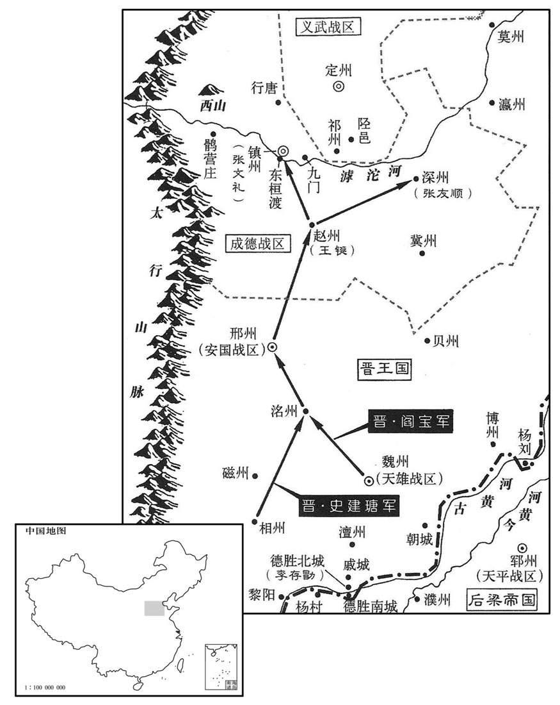
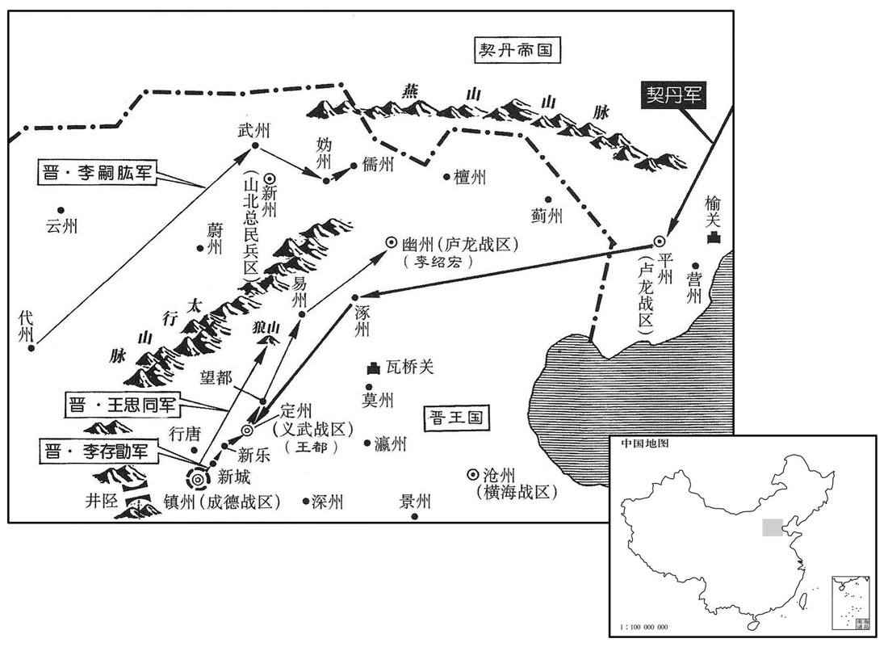
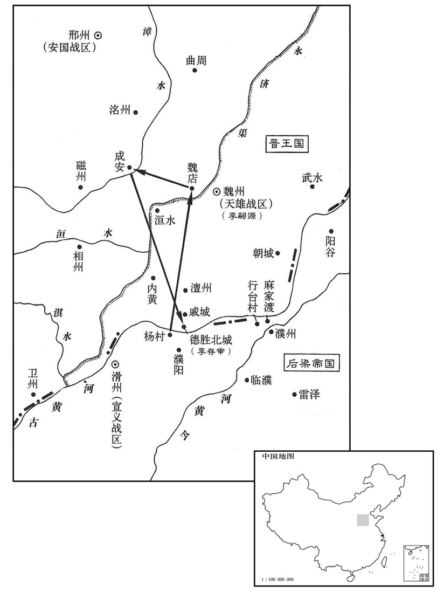
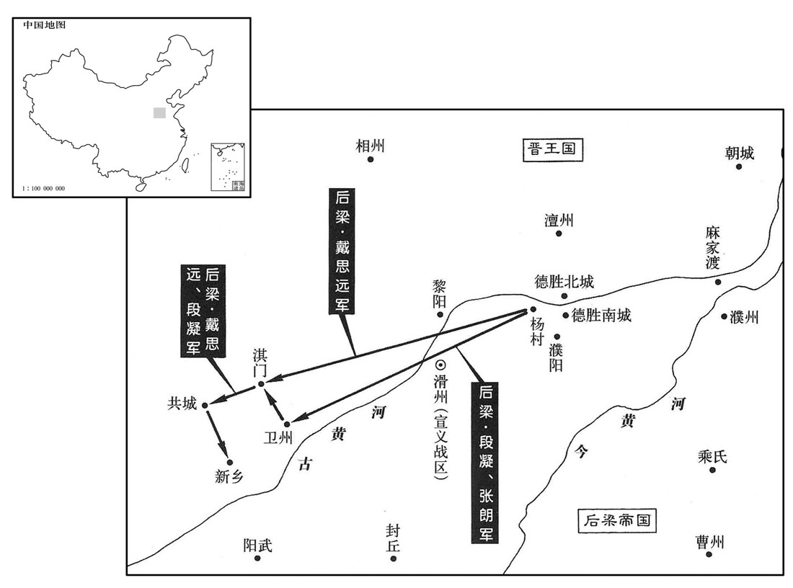

卷次与人物目录 / 卷271
资治通鉴 · 卷第二百七十一【后梁纪六】
公元919年至公元922年 · 原文、白话与胡三省注
本页按胡注本编排保存全卷内容。白话采用本站所据译本，未可靠对应的内容另列说明；事件标题用于定位，并非原书文字。
本卷共95段原文，94段有译文对应，1段缺译或待核对。
卷第二百七十一【后梁纪六】起屠维单阏（己卯）十月，尽玄黓敦牂（壬午），凡三年有奇。
卷首原文与注释
均王下
公元919年 · 后梁均王贞明五年
贞明五年〔（己卯、九一九）〕
本年记事分属相邻卷，按原书顺序分别保留：第270卷 · 第271卷。
本年事件索引（现代整理）
冬，十月，出蒙为楚州团练使。〔承上卷徐温恶蒙事。〕
冬季，十月，吴国派杨出任楚州团练使。
晋王如魏州，发徒数万，广德胜北城，日与梁入争，大小百余战，互有胜负。左射军使石敬瑭与梁人战河壖，〔左射军使，统军士之能左射者。壖，而缘翻，河边地也。〕梁人击敬瑭，断其为马甲，〔断，丁管翻。薛史曰：晋高祖为梁人所袭，马甲连革断。〕横冲兵马刘知远以所乘马授之，自乘断甲者徐行为殿；〔殿，丁练翻。〕梁人疑有伏，不敢迫，俱得免，敬瑭以是亲爱之。敬瑭、知远，其先皆沙陀人。敬瑭，李嗣源之伲也。〔石敬瑭、刘知远始此。〕
晋王到魏州，派数万名士卒扩建德胜北城，每天都和后梁争战，大小战争百余次，互有胜负。左射军使石敬瑭和后梁军在黄河边上交战，后梁军攻打石敬瑭，击断了石敬瑭战马的铠甲，横冲兵马使刘知远把自己的战马给了石敬瑭，自己骑着断了甲的马在军队在后面慢慢走。后梁军怀疑晋军有伏兵，不敢靠近，因此他们都幸免于难。因此，石敬瑭更加宠爱刘知远。石敬瑭、刘知远的先人都是沙陀人。石敬瑭是李嗣源的女婿。
刘鄩围张万进于兖经年，城中危窘，〔去年八月，刘鄩围兖州，事见上卷。窘，渠陨翻。〕晋王方与梁人战河上，力不能救。万进遣亲将刘处让乞师于晋，晋王未之许，处让于军门截耳曰：「苟不得请，生不如死！」晋王义之，将为出兵，〔为，于伪翻。〕会鄩已屠兖州，族万进，乃止。以处让为行台左骁卫将军。处让，沧州人也。〔张万进自沧州徙兖州，刘处让盖从之。处，昌吕翻。骁，坚尧翻。〕
刘在兖州包围张万进已经一年多，城中危急窘困，这时晋王正和后梁军在黄河上作战，无力解救兖州。张万进派遣他的亲信将领刘处让向晋王请求援兵，晋王没有答应。刘处让在军营门口割掉自己的耳朵，说：“如果不答应请求，活着不如死了。”晋王认为他很义气，准备出兵援救兖州。这时正好刘已经攻下兖州，灭了张万进家族，才停止出兵援助。晋王任命刘处让为行台左骁卫将军。刘处让是沧州人。
十一月，吴武宁节度使张崇寇安州。
十一月，吴国武宁节度使张崇率兵侵犯安州。
丁丑，以刘鄩为泰宁节度使、同平章事。〔刘鄩先以河朔丧师，贬为团练使，落平章事，今以平张万进，复为使相。〕
丁丑（十三日），后梁帝任命刘为泰宁节度使、同平章事。
章卯，王瓒引兵至戚城，〔戚城在德胜西，即春秋时卫之戚邑也。杜预曰：戚，河上之邑。〕与李嗣源战，不利。
辛卯（二十七日），王瓒率兵到了戚城，与李嗣源交战，没有取胜。
梁筑垒贮粮于潘张，〔贮，丁吕翻。潘张，地名。盖潘、张二姓居之，因以名村，如杨村之类一姓而名村也。其它如麻家渡，赵步，又皆以姓而名津步，此皆载于通鉴。薛史云：潘张村在河曲。〕距杨村五十里。十二月，晋王自将骑兵自河南岸西上，邀其饷者，俘获而还；〔上，时掌翻。还，从宣翻，又如字。〕梁人伏兵于要路，晋兵大败。晋王以数骑走，梁数百骑围之，李绍荣识其旗，〔凡行军，主将各有旗以为表识，今谓之「认旗」。〕单骑奋击救之，仅免。戊戌，晋王复与王瓒战于河南，〔复，扶又翻。〕瓒先胜，获晋将石君立等；既而大则，乘小舟渡河，走保北城，〔杨村北城也。〕失亡万计。帝闻石君立勇，〔石君立即救晋阳者也，见二百六十九卷二年。〕欲将之，〔将，即亮翻。〕系于狱而厚饷之，使人诱之。〔诱，音酉。〕君立曰：「我晋之败将，而为用于梁，虽竭诚效死，谁则信之！人各有君，何忍反为仇雠用哉！」帝犹惜之，尽杀所获晋将，独置君立。晋王乘胜遂拔濮阳。〔考异曰：庄宗实录：「天佑十五年，贺緕屯于濮州北行台里。十二月，辛酉，上次于临濮，贼亦舍营踵我。癸亥，次于胡柳。明日，接战王彦章败走濮阳。甲子，进攻濮阳，一鼓而拔。」按唐地理志，濮州亦谓之濮阳郡，治郅城，有濮阳、临濮二县。据庄宗实录则行台里在临濮东，胡柳在濮阳东。彦章所保，庄宗所拔者，皆濮阳县，非濮州也。而庄宗列传及薛史阎宝传皆云彦章骑军已入濮州，山下惟列步兵，向晚皆有归心。是以濮阳即为濮州也。李嗣昭传，嗣昭云：「贼无营垒，去临濮地远，日已晡晚，皆有归心，但以精骑挠之，无令夕食，晡后追击，破之必矣。我若收军拔寨，贼入临濮，俟彼整齐复来，则胜负未决。」是又以濮阳即为临濮也。按薛史梁纪，贞明五年四月制书，放濮州税课，是濮州犹属梁也。庄宗实录，天佑十六年十二月，攻下濮阳，下教告谕曹、濮百姓，劝令归附，是濮州未属晋也。又贺緕屯土山西，晋军在其东，彦章已西入濮阳，緕岂得更东归临濮！疑宝传濮州、嗣昭传临濮皆当为濮阳，史氏文饰之误也。又庄宗实录，去年十二月，晋已拔濮阳，至此又元攻下濮阳。按薛史梁纪，去年十二月晋人攻濮阳陷之，今年十二月又元晋入陷濮阳；唐纪去冬拔濮阳，今年四月追袭贺緕至濮阳，十二月无攻下濮阳事。贺緕传，贞明四年领大军营于行台村，十二月战败，四月退军行台，寻卒。若非实录及梁纪重复，则是去冬唐虽得濮阳，弃而不守，今年冬复攻拔之也。〕帝召王瓒还，以天平节度使戴思远代为北面招讨使，屯河上以拒晋人。
后梁军在潘张修筑营垒，储蓄粮食，潘张离杨村五十里。十二月，晋王率领骑兵从黄河南岸向西行进，阻截后梁军的送粮人，俘虏了送粮人而返。后梁军在要害路段埋伏了士兵，晋军大败。晋王领着几个骑兵逃走，后梁军用几百骑兵包围了他们。晋将李绍荣认出是自己军队的旗帜，就一个人骑马去奋力解救晋王，仅使晋王免于一死。戊戌（初五），晋王又和王瓒在黄河南岸交战，王瓒先取得胜利，俘获了晋将石君立等。过了一阵，王瓒的军队被晋军打败，王瓒乘小船渡过黄河，跑回北城坚守。这次战败，有一万多士卒逃跑或被杀。后梁帝听说石君立非常勇敢，打算让他做自己的将领，把他关在监狱里，给他丰厚的待遇，并派人去劝诱他。石君立说：“我是晋军的败将，如果在梁国被起用，虽竭诚效死，有谁能相信我呢？”后梁帝还是很爱惜他，把俘获的其他晋将全部杀掉，只留下了石君立。晋王乘胜前进，一举攻下了濮阳。后梁帝把王瓒召回，任命天平节度使戴思远代理北面招讨使，驻扎在黄河抵御晋军。
己酉，蜀雄武节度使兼中书令王宗朗有罪，削夺官爵，复其姓名曰全师朗，命武定节度使兼中书令桑弘志讨之。
己酉（十六日），前蜀国雄武节度使兼中书令王宗朗犯了罪，前蜀主解除了他的官爵，恢复了他的姓名叫全师朗，命令武定节度使兼中书令桑弘志讨伐他。
吴禁民私畜兵器，盗贼益繁。御史台主簿京兆卢枢上言：〔唐御史台置主簿一人，掌印，受事发辰，核台务，主公廨及奴婢，勋散官之职。〕「今四方分争，宜教民战。且善人畏法禁而奸民弄干戈，是欲偃武而反招盗也。宜团结民兵，使之习战，自卫乡里。」从之。
吴国禁止百姓私藏武器，盗贼越来越多。御史台主簿京兆人卢枢上奏说：“现在四方纷争，应当教百姓熟习战斗。况且善良的人是惧怕法律禁令的，而不安分守己的人舞弄干戈，这是想禁止争斗反而招来盗贼啊！应当组织民兵，让他们熟习战斗，各自保卫自己的家乡。”吴王听从了卢枢的意见。
公元920年 · 后梁均王贞明六年
六年〔（庚辰、九二○）〕
上传原文的注释括号有异常，字符原样保留；无法可靠划分的段落默认全文显示。
本年事件索引（现代整理）
- 桑弘志攻克金州擒获全师朗，王衍赦免其罪
- 杨廷式坚持查办张崇及受贿县令，徐知诰因此敬重他
- 吴将张崇攻安州未克而还
- 李建及任魏博内外牙都将后受谗被免军职，改任代州刺史
- 南汉采纳杨洞潜建议兴办学校、开科举并设置选官制度
- 梁廷任李琪为中书侍郎同平章事，后因任官徇私被罢相
- 朱友谦攻取同州并逐走梁将程全晖，随后分别向梁晋求援
- 杨隆演为人厚重恭谨，徐温专权后渐渐沉郁成疾
- 徐温拒绝旁人劝其代杨氏自立，迎杨溥监国并调杨蒙出任舒州
- 杨隆演去世，杨溥继位为吴王
- 前蜀任周庠为永平节度使
- 梁廷命刘鄩等围攻同州，朱友谦向晋求援
- 王衍建高祖原庙并以亵味鼓吹祭祀，张士乔进谏后愤而投水
- 刘鄩等围攻同州，晋王派李存审等率军救援
- 王衍发布北巡诏令并宠信韩昭，韩昭借机卖官
- 王衍披甲执弓率百里旌旗从成都出巡，不听段融劝谏
- 李存审等抵达河中后渡河驻朝邑，刘鄩不敢轻出
- 河中将士面对晋梁交战仍持两端，朱友谦拒绝背弃李存勖
- 晋军攻破华州外城并击败刘鄩，追击后祭拜唐帝陵
- 温昭图担心河中军攻打崇州，听窦维建议请求移镇
- 王衍赴武定军后数日即返回安远城
- 王衍命王宗俦等率军攻岐，因军粮不足而退驻多处
- 王衍自安远出发赴梓州，史官讥评其纵欲夺人妇女
- 王镕晚年沉溺享乐，不再亲理政务，权力交给李蔼、李弘规等人
- 张文礼趁刘守文赴幽州省父时据沧州叛乱，后投赵王并改名张德明
- 王镕沉迷佛道斋醮和西山游赏，听信石希蒙谗言后杀李弘规等数十人
- 徐温视察金陵城后命人焚毁陈彦谦提交的开支册籍
- 王审知因白鹿紫芝符瑞而罢黜骄纵求节镇的侄子王延彬
- 刘岩遣使与前蜀通好
- 钱镠遣使为子钱传琇向楚王马殷求婚，马殷答应
春，正月，戊辰，蜀桑弘志克金州，执全师朗，献于成都，蜀主释之。
春季，正月，戊辰（初五），前蜀将领桑弘志攻克金州，抓获全师朗，送到成都，前蜀主把他释放了。
崇在庐州，贪暴不法。庐江民讼县今受赇，徐知诰遣侍御史知杂事杨廷式往按之，欲以威崇，廷式曰：「杂端推事，其体至重，〔唐御史台侍御史六人，以久次一人知杂事，谓之杂端。〕职业不可不行。」知诰曰：「何如﹖」廷式曰：「械系张崇，使吏如升州，簿责都统。」〔簿责者，一二而责之。〕知诰曰：「所按者县今耳，何至于是！」廷式曰；「县今微官，张崇使之取民财转敌都统耳，〔都统，谓徐温也。〕岂可舍大而诘小乎！」〔诘，去吉翻。〕知诰谢之曰：「固知小事不足相烦。」〔烦，劳也。〕以是益重之。廷式，泉州人也。
张崇在庐州，贪暴不法。庐江的百姓上诉，说庐江县令接受了贿赂。徐知诰派侍御史知杂事杨廷式前往检查，打算以此来威胁张崇一下。杨廷式说：“杂端推事官，体制上非常重要，本职工作，不可不做。”徐知诰说；“怎么办呢？”杨廷式说：“给张崇戴上刑具，派一个官吏去升州，反复诘责都统。”徐知诰说：“现在查办的不过是一个县令，何至如此！”杨廷式说：“县令虽然是个小官，但张崇让他收取的民财都转献给了都统，难道可以舍去大官而去诘责一个小官吗？”徐知诰道歉说：“本来知道小事不足以麻烦你。”徐知诰因此更加器重杨廷式。杨廷式是泉州人。
吴张崇攻安州，不克而还。
吴将张崇进攻安州，没有攻下，率兵返回。
晋王自得魏州，〔得魏州见二百六十九卷元年。〕以李建及为魏博内外牙都将，将，银枪效节都。〔将，即亮翻；下同。〕建及为人忠壮，所得赏赐，悉分士卒，与同甘苦，故能得其死力，所向立功，同列疾之。宦者韦令图监建及军，谮于晋王曰：「建及以私财骤施，〔施，式豉翻。〕，此其志不小，不可使将牙兵。」王疑之；建及知之，〔【章：十二行本「之」下有「自恃无他」四字；乙十一行本同；孔本同；张校同；退斋校同。】〕行之自若。三月，王罢建及军职，以为代州刺史。〔史言晋王不能信属贤将，李建及由是怏怏而卒。〕
自从晋得到魏州以后，任命李建及为魏博内外牙都将，统率禁卫军银枪效节都。李建及为人忠诚壮节，得到的赏赐全部分给士卒，与士卒们同甘共苦，所以能够得到士卒们对他尽心尽力，只要他出去作战，一定会立功，同僚们很嫉妒他。宦官韦令图监管李建及的军队，偷偷地对晋王说：“李建及用自己的财物多次分给士卒，如此看来，他的志向不小，不能让他率领禁卫军了。”晋王产生了怀疑。李建及知道后，行之自若。三月，晋王免去李建及的军职，任命他为代州刺史。
汉杨洞潜请立学校，开贡举，设铨选；汉主岩从之。〔校，户教翻。〕
南汉杨洞潜请求建立学校，开设贡举，量才授官，南汉主刘岩听从了他的意见。
夏，四月，乙亥，以尚书左丞李琪为中书侍郎、同平章事。琪，珽之弟也，〔李珽始见于唐昭宗天复三年而死梁诛友珪之时。〕性疏俊，挟赵岩、张汉杰之势，颇通贿赂。萧顷与琪同为相，顷谨密而阴匼琪短。〔伺，相吏翻。〕久之，有以摄官求仕者，琪辄改摄为守。顷奏之。〔欧史曰：琪所私吏当得试官，琪改试为守，为顷所发。〕帝大怒，欲流琪远，方赵、张左右之，〔左右，读曰「佐佑」。〕止罢为太子少保。〔考异曰：薛史止有琪作相月日，无罢相年月，故终言之。〕
夏季，四月，乙亥（疑误），后梁帝任命尚书左丞李琪为中书侍郎、同平章事。李琪是李的弟弟，他的性情开朗出众，依仗赵岩、张汉杰的势力，颇通贿赂。萧顷和李琪同为宰相，萧顷谨慎秘密地观察李琪的短处。过了很久，有人想将试用的官改为正式的官，李琪就给他改试用官为守官，萧顷把这件事上奏给后梁帝。后梁帝十分生气，想把李琪流放到远方，经赵岩、张汉杰帮助，才未流放，降为太子少保。
河中节度使冀王友谦以兵袭取同州，逐忠武节度使程全晖，全晖奔大梁。右諆以其子令德为忠武留后，表求节钺，帝怒，不许。既而惧友諆怨望，己酉，以有谦兼忠武节度使。制下，〔下，户嫁翻。〕友谦已求节钺于晋王，〔朱有谦自此遂归于晋。〕晋王以墨制除令德忠武节度使。〔考异曰：庄宗列传，「上令幕客王正言送节旄赐之。」庄宗实录列传、薛史友谦传皆云「右谦以令德为帅，请节钺，不许。」薛史末帝纪贞明六年云，「陷同州，令德为留后，表求节旄，不允。」而「贞明四年六月甲辰，以歙州刺史朱令德忠武留后。」恐是四年已陷同州。〕
河中节度使冀王朱友谦率兵袭击并夺取了同州，赶走了忠武节度使程全晖。程全晖逃到了大梁。朱友谦任命他的儿子朱令德为忠武留后，并上表皇帝请求赐发符节和斧钺，后梁帝十分生气，没有答应。后来后梁帝害怕朱友谦心怀不满，己酉（十七日），任命朱友谦兼任忠武节度使。后梁帝的命令下达时，朱友谦已向晋王请求到符节和斧钺，归降于晋王，于是晋王直接发出亲笔手令任命朱令德为忠武节度使。
吴宣王重厚恭恪，徐温父子专政，王未尝有不平之意形于言色，温以是安之。及建国称制，〔见上卷上年。〕尤非所乐，多沈饮鲜食，〔乐，音洛。沈，持林翻。鲜，息浅翻，少也。〕遂寝疾。
吴宣王很厚道，而且谦恭谨慎，徐温父子掌管全权，宣王从来没有不平之意表现在脸色上，徐温因此就安然自在。到了建国称王以后，宣王更没有什么所高兴的，经常喝酒，很少吃饭，慢慢就卧床生病了。
五月，温自金陵入朝，议当为嗣者。或希温意言曰：「蜀先主谓武侯：『嗣子不才，君宜自取。』」〔见六十九卷魏文帝黄初三年。〕温正色曰：「吾果有意取之，当在诛张颢之初，〔诛张颢见二百六十九卷开平二年。〕岂至今日邪！使杨氏无男，有女亦当立之。敢妄言者斩！」乃以王命迎丹杨公溥监国，〔考异曰：吴录、九国志，「有女当立」之语在诛张颢时，今从薛史。十国纪年：「王疾病，大丞相温来朝，议立嗣君。门下侍郎严可求言王诸子皆不才，引蜀先主顾命诸葛亮事，温以告知诰，知诰曰：『可求多知，言未必诚，不过顺大人意尔。』温曰：『吾若自取，非止今日。张颢之乱，嗣王幼弱，政在吾手，取之易于反掌。然思太祖大渐，欲传位刘威，吾独力争，太祖垂泣，以后事托我，安可忘也！』乃与内枢密使王令谋定策，称隆演命，迎丹杨公溥监国。己丑，降演卒。六月，戊申，溥即王位。」恐可求亦不应有此言。今从薛史。〕徙溥兄蒙为舒州团练使。〔越蒙而立溥者，蒙为徐温所忌也。〕
五月，徐温从金陵回朝，商议谁当为继承王位的人。有人迎合徐温的心意说：“蜀先主刘备对武侯说：‘嗣子没有才能，您可以自代王位。’”徐温严肃地说：“我如果真有心取代王位，是在杀掉张颢的时候，哪能等到今日！即使杨氏没有儿子，有女儿也应当立她为王。再有敢胡说的，一律杀掉。”于是以宣王之命迎接丹杨公杨溥回来代行处理政事，调杨溥的哥哥杨任舒州团练使。
己丑，宣王殂。〔年二十四。〕六月，戊申，溥即吴王位，〔溥，杨行密第四子。〕尊母王氏白太妃。
己丑（二十八日），宣王去世。六月，戊申（十八日），杨溥登吴王位。尊称他的母亲王氏为太妃。
丁巳，蜀以司徒兼门下侍郎、同平章事周庠同平章事，充永平节度使。〔唐末置之平军于邛州。邵史职考，蜀以雅州为永平节度。〕
丁巳（二十七日），前蜀主让司徒兼门下侍郎、同平章事周以同平章事衔，出任永平节度使。
帝以泰宁节度使刘鄩为河东道招讨使，帅感化节度使尹皓、静胜节度使温昭图、庄宅使段凝攻同州。〔帅，读曰率；下同。〕
后梁帝任命泰宁节度刘为河东道招讨使，率领感化节度使尹皓、静胜节度使温昭图、庄宅使段凝一起攻打同州。
闰月，庚申朔，蜀主作高祖原庙于万里桥，〔原庙起于汉。原，再也，已立太庙而再立庙曰原庙。万里桥在成都。还宇记曰：昔者费祎聘吴，诸葛亮送之至此桥，曰：「万里之路，始于此矣。」因以名桥。〕帅后妃、百官用亵味作鼓吹祭之。〔亵味，常御嗜好之味也。记郊特性曰：禘尝，不敢用亵味而贵多品，所以交于神明之义也。亵，息列翻。〕华阳尉张士乔上疏谏，以为非礼，〔华阳县本唐贞观十七年所置蜀县，在益州郭下，与城都分治，干元元年改为华阳县。华，户化翻。〕蜀立怒，欲诛之，太后以为不可，乃削官流黎州，士乔感愤，赴水死。
闰五月，庚申朔（初一），前蜀主在万里桥修建了高祖原庙，带领后妃、百官，供上高祖生前最喜欢吃的食品，击鼓吹乐来祭祀高祖。华阳尉张士乔上书劝说前蜀主，认为这样做不合祭礼。前蜀主十分生气，打算把他杀掉。太后认为不能杀，于是免了他的官职，把他流放到黎州。张士乔感到愤怒，跳水自杀。
刘鄩等围同州，朱友谦救于晋；秋，七月，晋王遣李存审、李嗣昭、李建及、慈州刺史李存质将兵救之。
刘等包围了同州，朱友谦请求晋国援救。秋季，七月，晋王派遣李存审、李嗣昭、李建及、慈州刺史李存质率兵前去援救。

乙卯，蜀主下诏北巡，以礼部尚书兼成都尹长安韩昭为文思殿大学士，位在翰林承旨上。昭无文学，以便佞得幸，〔便，毗连翻。〕出入宫禁，就蜀主什通、渠、巴、集数州刺史卖之以营居第，蜀主敨之。识者知蜀之将亡。
乙卯（二十六日），前蜀主颁发诏书，准备到北边巡视。任命礼部尚书兼成都尹长安人韩昭为文思殿大学士，地位在翰林承旨之上。韩昭没有文才，用花言巧语、阿谀逢迎得到的前蜀主宠幸，出入宫禁，在接近前蜀主时，请求卖通、渠、巴、集四州刺史官爵，用来修建他的住宅，前蜀主答应了。明白这件事的人知道前蜀将要灭亡。
八月，戊辰，蜀主发成都，被金甲，冠珠帽，执弓矢而行，被，皮义翻。冠，古玩翻。〕旌旗兵甲，亘百余里。雒令段融上言：〔雒，汉古县，唐属汉州，为州治所。上，时掌翻。〕「不宜远离都邑，〔离，力智翻。〕当委大臣征讨。」不从。九月，次安远城。〔凡兵一宿为信，过信为次。〕
八月，戊辰（初十），前蜀主从成都出发，他身披金甲，头戴珠帽，手执弓箭而行，随从的旌旗兵甲，连接起来有百余里长。雒县守令段融上书说：“不宜远离都城，应委派大臣出去征讨。”前蜀主不听。九月，军队驻扎在安远城。
李存审等至河中，即日济河。〔自河中济河救同州。〕梁人素轻河中兵，每战必穷追不置。存审选精甲二百，杂河中兵，直压刘鄩垒，鄩出千骑逐之；知晋人已至，大惊，〔时鄩兵出逐河中兵，晋骑反击之，获梁骑兵五十，梁人知其晋军也，大惊。〕自是不敢轻出。晋人军于朝邑。〔九域志：朝邑在同州东三十五里。〕
李存审等到了河中，当天过了黄河。后梁军平时很轻视河中兵，每次战斗都要穷追不舍。李存审挑选了二百名精兵，其中又搀杂了一些河中兵，一直逼近刘的军营。刘率领一千骑兵出去追逐，发现晋军已经来到，十分吃惊，从此以后，刘不敢轻易出动。晋军驻扎在朝邑。
河中事梁久，〔唐昭宗之世，朱全忠降王珂，河中遂事梁。〕将士皆持两端。诸军大集，刍粟踊贵，水谦诸子说友谦〔说，式芮翻。〕且归款于梁，以退其师，友谦曰：「昔晋王亲赴吾急，秉烛夜战。〔谓与康怀贞等战也。事见二百六十八卷干化二年。〕今方与梁相拒，〔谓相距于河上也。〕又命将星行，分我资粮，岂可负邪！」
河中事奉后梁时间已经很长，将士们都是脚踩两只船。各路军队都集中在河中，粮草价格昂贵，朱友谦的儿子们劝说朱友谦诚心归服后梁，以此来让后梁军撤兵，朱友谦说；“从前晋王亲自率兵解救我的危急，手持火把连夜作战。现在正和后梁军相持，晋王又命令将帅披星戴月赶来援救，还给我们物资粮食，我们怎么能辜负他呢？”
晋人分兵攻华州，坏其外城。〔将，即亮翻。华，户化翻。坏，音怪。〕李存审等按兵累旬，乃进逼刘鄩营，鄩等悉众出战，大败，收余众退保罗文寨。〔薛史曰：鄩以余众退保华州罗文寨。〕又旬余，存审谓李嗣昭曰：「兽穷则搏，不如开其走路，然后击之。」乃遣人牧马于沙菟。鄩等宵遁，追击至渭水，又破之，杀获甚众。〔刘鄩用兵，十步九计，以此得名于时。至同州之役，与李存审遇，为所玩弄，若婴儿在人掌股之上，是何也﹖孽也！盖鸟之中伤者曰孽，闻弦鸣则引而高飞，力不足斯抎矣，故空弓可落也。刘鄩先为晋兵所破，见晋兵之来，气沮而胆消矣，乌能与之为敌哉！〕存审等移檄告谕关右，引兵略地至下邽，谒唐帝陵，哭之而还。〔唐帝陵在同州奉先县。还，从宣翻，又如字。〕
晋军分兵去攻打华州，破坏了华州的外城。李存审等按兵不动，几十天后才逼近刘的军营，刘等率领全军出来迎战，被打得大败，只好收拾剩下的军队退守罗文寨。又过了十几天，李存审对李嗣昭说：“野兽到了最困难的时候就会拼死搏斗，不如放开一条路让他们逃走，然后从后面追击他们。”于是李嗣昭派出人到沙苑去放马。刘等乘夜逃跑，李嗣昭率兵追击到渭水，又将刘的军队打败，斩杀和俘获很多。李存审等张贴檄文，告示关右，同时率兵攻占了很多地方，一直到下，谒拜了唐帝的陵墓，在陵前痛哭一番后返回。
河中兵进攻，静胜节度使温昭图甚惧。〔先年，温韬以义胜军降，改耀州曰崇州，义胜曰静胜，韬赐今名。〕帝使供奉官窦维说之曰：〔说，式芮翻。〕「公所有者华原、美原两县耳，〔唐末温韬为盗，据华原县。李茂贞以华原为茂州，韬为刺史，寻改耀州；又以美原县为鼎州，建义胜军，以韬为节度使。及降梁，改耀州为崇州，鼎州为裕州，义胜为静胜。是其所有者本唐两县也。虽名节度使实一镇将，比之雄藩，岂可同日语也，公有意欲之乎﹖」昭图曰：「然。」维曰：「当为公图之。」〔为，于伪翻。〕即教昭图表求移镇，帝以汝州防御使华温琪权知静胜留后。〔华，户化翻。〕
两版字句有差异，建议核对原文。
河中的军队向崇州发起进攻，静胜节度使温昭图非常害怕。后梁帝派供奉官窦维劝他说：“你仅仅有华原、美原两个县罢了，虽然名为节度使，其实是一个镇将，和一些强大的藩镇来比，怎么可以同日而语，你想扩大一点吗？”温昭图说：“当然。”窦维说：“让我为你来谋划。”于是就让温昭图上书请求改换个地方。后梁帝于是让汝州防御使华温琪暂为静胜留后。
冬，十月，辛酉，蜀主如武定军，收日，复还安远。〔复，扶又翻。〕
冬季，十月，辛酉（初三），前蜀主去了武定军，几天以后又回到安远。
十一月，戊子朔，蜀主以兼侍中王宗俦为山南节度使、西北面都招讨、行营安抚使，天雄节度使．同平章事王宗昱、永宁军使王宗晏、左神勇军使王宗信为三招讨以副之，将兵伐岐，出故关，壁于咸宜，〔壁者，筑壁垒以屯军。咸宜当在陇州汧源县界。〕入良原。〔良原县属泾州。九域志：在州西南六十里。〕丁酉，王宗俦攻陇州，岐王自将万五千人屯汧阳。〔汧阳县属陇州。九域志：在州东六十七里，东距凤翔五十五里。〕癸卯，蜀将陈彦威出散关，败岐兵于箭筈岭，〔杜佑曰：岐山即今之岐山县；其山两岐，故俗呼为箭筈岭。败，补迈翻。筈，古活翻。〕蜀兵食尽。引还。〔还，从宣翻，又如字。〕宗昱屯泰〔【章：十二行本「泰」作「秦」；乙十一行本；孔本同；张校同；退斋校同。】〕州，宗俦屯上邽，宗晏、宗信屯威武城。
十一月，戊子朔（初一），前蜀主任命兼侍中王宗俦为山南节度使、西北面都招讨、行营安抚使，任命天雄节度使、同平章事王宗昱，永宁军使王宗晏，左神勇军使王宗信为三名招作为副职，辅助王宗俦领兵伐岐。他们率兵出故关，在咸宜修筑壁垒，后进入良原。丁酉（初十），王宗俦向陇州发起进攻，岐王亲自率领一万五千军队驻扎在阳。癸卯（十六日），前蜀将陈彦威从散关出兵，在箭岭击败了岐兵。前蜀军的粮食吃完后，才率兵回去。王宗昱驻扎在泰州，王宗俦驻扎在上，王宗晏和王宗信驻扎在武威城。

庚戌，蜀主发安远城；〔十二月庚申，至利州，阆州团练使林思谔来朝，请幸所治，从之。〔阆中，林思谔所治也。九域志：利州东南至阆州二百四十里。〕癸亥，泛江而下，〔泛嘉陵江也。〕龙舟画舸，〔画，与画同。舸，古找翻。楚人谓大船为舸。〕辉映江渚，州县供办，民始秋怨。〔此总言蜀主所经行州县，不特言阆州为然也。〕壬申，至阆州，州民何康女色美，将嫁，蜀主取之，赐其夫家帛百匹，夫一恸而卒。〕记：诸侯不下渔色。注云：谓不内取于国中也。内取国中为下渔色。国君而内取，象捕鱼然，中网则取之，是无所择。王衍夺人之妻，其为渔也殆有甚焉！〕癸未，至梓州。
本段缺少可靠对应白话，原文完整保留；未使用生成译文。
赵王镕自恃累世镇成德，得赵人心，生长富贵，〔长，知两翻。〕雍容自逸，治府第园沼，极一时之盛，〔治，直之翻。〕多事嬉游，不亲政事，事皆仰成于僚佐，〔仰，牛向翻。〕深居府第，权移左右，行军司马李蔼、宦者李弘规用事于中外，〔外则李蔼，中则李弘规。〕宦者石希蒙尤以谄谀得幸。
赵王王熔依仗世代镇守成德，颇得赵地人心，生活富裕，地位显贵，容仪温文，悠然自得。他治理的府第园池，在当时是最好的。他经常游玩，不问政事，一切政事都依靠僚佐来处理。他深居府第，把大权交给了他的左右官员。行军司马李蔼、宦官李弘规掌管内外事务。宦官石希蒙尤其靠阿谀奉承得到宠爱。
初，刘仁恭使牙将张文礼从其子守文镇沧州，守文诣幽州省其父，文礼于后据城作乱，沧人讨之，奔镇州。〔比言唐末事，叙张文礼庂所自来。省，悉景翻。〕文礼好夸诞，〔好，呼到翻。〕自言知兵，赵王镕奇之，养以为子，更名德明，〔更，工衡翻。〕悉以军事委之。德明将行营兵从晋王，〔事始二百六十七卷太祖干化元年。〕镕欲寄以腹心，使都指挥使符习代还，以为防城使。
当初，刘仁恭派牙将张文礼随他的儿子刘守文去镇守沧州，刘守文到幽州去看望父亲，张文礼随后占据了沧州城发动叛乱，沧州人讨伐他，他逃到了镇州。张文礼喜欢吹大话，自称会打仗，赵王王熔认为他很奇特，于是收为养子，并改名为德明，把全部的军事委托给他。德明率领着行军部队跟随着晋王，王熔想委派一个亲信去，于是派都指挥使符习替代德明，让他回来，任防城使。
镕晚年好事佛及求仙，〔好，呼到翻。〕专讲佛经，受符箓，广斋，醮，合炼仙丹，〔合，音合。〕盛饰馆于□于西山，每往游之，〔镇州西州谓之房山，上有西王母祠，镕欲求仙，故数往游之。〕登山临水，数月方归，将□士卒陪从者常不下万人，〔从，才用翻。〕往来供顿，军民皆苦之。是月，自西山还，宿鹘营庄，〔鹘，户骨翻。〕石希蒙劝王复之他所；〔复，扶又翻。〕李弘规言于王曰：「晋王夹河血战，〔或战河南，或战河北，故曰夹河。〕栉风江雨，〔栉，去瑟翻。〕亲冒矢石，而王专以供军之资奉不急之费。且时方艰难，人心难测，王久虚府风，远出游从，万一有奸人为变，闭关相距，将若之何﹖」王将归，希蒙密言于王曰：「夕规妄生猜间，〔间，古苋翻。〕出不逊语以劫胁王，专欲夸大于外，长威福耳。」〔长，知两翻。〕王遂留，信宿无归志。〔诗九罭云：于女信宿。毛氏传：再宿曰信。与左传「师行一宿为信」之义不同。〕弘规乃教内牙都将苏汉衡帅亲军，擐甲拔刃，〔帅，读曰率。擐，音宦。〕诣帐前白王曰：「士卒暴露已久，愿从王归！」弘规因进言曰：「石希蒙劝王游从不已，且闻欲阴谋弒逆，请诛之以谢众。」王不听牙兵遂大噪，斩希蒙首，诉于前。王怒且惧，亟归府。是夕，遣其长子副大使昭祚与王德明将兵围弘规及李蔼之第，族诛之，连坐者数十家。又杀苏汉衡，收其党与，穷治反状，亲军大恐。〔为张文礼嗾军士杀王镕张本。治，直之翻；下同。〕
王熔晚年信佛，喜欢求仙，专门讲习佛经，又学习道家符，广设斋醮向仙道祈祷，冶炼金丹。在西山把馆宇装饰的非常华丽，经常去那里游玩。他登山观水，几个月后才回来，陪他的左右将士经常不下一万人。来往食宿，耗资巨大，军民都深受其苦。这个月，从西山回返，住在鹘营庄，石希蒙劝王熔再到别的地方去玩。李弘规对王熔说：“晋王在黄河两岸和梁军血战，栉风沐雨，亲自冒着箭石率兵前进。而大王专门把供给军队用的物质挪用于一些不急的事情，况且时下正处在困难时期，人心难测，大王如果长期离开府第，远出游玩，万一有奸人叛变，关起关门，把我们隔在外面，该怎么办呢？”赵王准备回去，石希蒙又偷偷地和赵王说：“李弘规胡乱猜想，口出不逊之言来威胁大王，专门对外夸示自己，以提高自己的威福。”于是赵王又留了下来，连续住了两夜还不想回去。李弘规于是让内牙都将苏汉衡率领亲军穿甲持刀，到帐篷前面对赵王说：“士卒们离家在外已经很长时间了，都希望跟从大王回去。”李弘规因此也劝赵王说：“石希蒙劝大王没完没了地游玩，而且还听说他准备谋害大王，请把他杀掉来向大家认错。”赵王不听，于是卫队士卒大声喧哗起来，杀了石希蒙，拿着他的头到赵王面前诉说。赵王十分生气也很害怕，于是赶快回到了府第。当天晚上赵王就派他的长子副大使王昭祚和王德明率兵包围了李弘规和李蔼的住宅，把他的全家全部杀掉，受牵连的有几十家。又将苏汉衡杀掉，拘捕了他的党羽，彻底追究他们反叛的情况，赵王的亲信部队感到十分惊恐。
吴金陵城成，陈彦谦上费用册籍，徐温曰：「吾既任公，不复会计。」〔上，时掌翻。复，扶又翻。会，工外翻。〕悉焚之。
吴国修筑的金陵城落成，陈彦谦将开支帐册送给徐温过目，徐温说：“我既然任用你办，我就不再检查核算了。”于是把那些帐簿全部烧了。
初，闽王审知承制加其从子泉州刺史延彬领平卢节度使。〔从，才用翻。〕延彬治泉州十七年，吏民安之。会得白鹿及紫芝，僧浩源以为王者之符，延彬由是骄纵，密遣使浮海入贡，求为泉州节度使。事觉，审知诛浩源及其党，黜延彬归私第。
当初闽王王审知承照制书让他的侄儿泉州刺史王延彬兼任平卢节度使。王延彬治理泉州十七年，官民都安居乐业，正好在这个时候，王延彬得到了白鹿和紫芝等祥瑞物品，僧人浩源认为这是王延彬要做帝王的征兆。王延彬因此骄傲放肆起来，他偷偷派人过海去帝王那里纳贡，并请求闽王任命他为泉州节度使。事情败露后，王审知诛灭了浩源及其同党，罢免了王延彬的官爵，打发他回了家。
汉主岩遣使通好于蜀。〔好，呼到翻。〕
南汉主刘岩派遣使者到蜀国去互通友好。

吴越王镠遣使为其子传琇求婚于楚，楚王殷许之。〔为，于伪翻；下为聘同。琇，音秀。〕
吴越王钱派遣使者到楚国为他的儿子钱传求婚，楚王马殷答应了他的请求。
译本中未与胡注本可靠对应的内容
以下另列供核对版本差异，不并入胡注本正文。
译本所附古文
庚戌，蜀主发安远城；十二月，庚申，至利州，阆州团练使林思谔来朝，请幸所治，从之。癸亥，泛江而下，龙舟画舸，辉映江渚，州县供办，民始愁怨。壬申，至阆州，州民何康女色美，将嫁，蜀主取之，赐其夫家帛百匹，夫一恸而卒。癸未，至梓州。
译本白话
庚戌（二十三日），前蜀主自安远城出发，十二月，庚申（初三），到达利州，阆州团练使林思谔来朝拜，请求前蜀主巡视阆州，前蜀主答应了他的请求。癸亥（初六），顺江而下，龙舟彩船，光辉照映在江的两岸，这些都是强制沿江州县供应，老百姓开始发愁抱怨。壬申（十五日），前蜀主到了阆州，阆州的百姓何康有个很漂亮的女儿，将要出嫁，前蜀主就夺为己有，然后赏赐给她的夫家一百匹丝帛，那个未婚夫极其悲痛而死。癸未（二十六日），前蜀主到了梓州。
公元921年 · 后梁均王龙德元年
龙德元年〔（辛巳、九二一）是年五月方改元。〕
上传原文的注释括号有异常，字符原样保留；无法可靠划分的段落默认全文显示。
本年事件索引（现代整理）
- 王衍回到成都
- 王衍冷落高知言之女、宠爱韦妃，高知言因此忧愤而死
- 王衍沉迷锦屏击球、焚香宴饮与夜游，耗费无度
- 梁廷调温昭图任匡国节度使镇守许州
- 王衍、杨隆演屡劝李存勖称帝，李存勖以李克用遗言拒绝
- 李存勖在将佐不断劝进下准备玉玺礼器，真传国宝被进献
- 张承业劝李存勖先灭梁、复唐再受禅，悲愤而归后病不起
- 吴国改元顺义
- 赵王王镕杀李弘规、李蔼后将政务交给其子王昭祚
- 赵王亲军趁王镕沉迷斋醮时发动政变，杀死王镕及王氏全族
- 吴国将吴越俘虏钱镒送回，吴越亦释放吴将李涛
- 张文礼告知赵地变乱并劝李存勖称帝，李存勖虽悲痛仍授其留后
- 惠王朱友能起兵攻大梁，梁廷派兵讨伐并围困陈州
- 梁廷改元
- 刘鄩因奉命讨朱友谦而被赵岩等诬陷，最终遭梁帝毒杀
- 发生日食
- 朱友能投降，梁廷赦免其死罪并降封房陵侯
- 晋王欲征召唐朝旧臣，苏循拜见李存勖并献笔求用
- 张文礼表面受晋任命，暗中向契丹求援并试图诱梁援兵
- 晋军截获张文礼通梁及通契丹的密信，符习请率赵军为王镕复仇
- 李存勖任符习为成德留后并攻下赵州，张文礼因惊惧去世
- 李存勖调兵攻镇州时，梁军袭击德胜南北城，被李存勖击败
- 王处直无子时收养刘云郎为嗣并任节度副大使
- 王处直劝李存勖宽赦张文礼，又暗中召契丹以解镇州之围
- 王处直养子王都发动政变，软禁处直并杀其子孙腹心
- 徐温劝杨溥祭祀南郊，吴王行礼并加徐知诰同平章事
- 徐知诰劝徐温召寿州崔太初入朝以免生变，徐温仍征其入朝
- 李存勖攻镇州不克，张处瑾派弟弟突围求救被晋军截杀
- 契丹主受王郁诱说而南下援镇州，述律后劝阻未果
- 高季昌令倪可福率万余人修江陵外郭，责其进度后又暗中补偿
- 南汉任倪曙为同平章事
- 楚军受到辰州、溆州蛮人侵扰，姚彦章奉命平定
春，正月，甲午，蜀主还成都。〔去年七月蜀主出巡游，至是方还。〕
春季，正月，甲午（初七），前蜀主回到了成都。
初，蜀主之为太子，高祖为聘兵部尚书高知言女为妃，无宠，〔蜀主王建庙号高祖。〕及韦妃入宫，尤见疏薄，至是遣还家，知言惊仆，不食而卒。〔卒，子恤翻。〕韦妃者，徐耕之孙也，有殊色，蜀主适徐氏，见而悦之，太后因纳于后宫，蜀主不欲娶于母族，托云韦昭度之孙。〔韦昭度，唐僖宗时尝奉制帅蜀，故托言之。〕初为婕妤，累加元妃。〔婕妤，音接予。〕
当初，前蜀主为太子时，高祖王建为他聘兵部尚书高知言的女儿为妃，不受喜欢。韦妃入宫后，对高氏更加疏远，把她送回娘家。高知言为此吓得摔倒，吃不下饭死去。韦妃是徐耕的孙女，长得很漂亮，前蜀主到他的母亲徐氏那里，见到此女十分喜欢，因此太后就把她留在后宫。前蜀主不愿意娶母亲家族的人为妻，于是假托说是韦昭度的孙女。开始任她为婕妤，后来逐渐升为正妃。
蜀主常列锦步障，击球其中，往往远适而外人不知。爇诸香，昼夜不绝。久而厌之，更爇皁荚以乱其气。〔更，工衡翻。爇，如悦翻。皁荚如猪牙者良，爇之其气酷烈。〕结缯为山，及宫殿楼观于其上，或为风雨所败，则更以新者易之。或乐饮缯山，涉旬不下。〔缯，慈陵翻。观，工唤翻。败，补迈翻。乐，音洛。〕山前穿渠通禁中，或乘船夜归，令宫女秉蜡姖千余前船，却立照之，水面如昼。或酣饮禁中，鼓吹沸腾，〔吹，尺睡翻。〕以至达旦。以是为常。
前蜀主经常挂起锦缎围成一个屏幕，在里面击球，往往到较远的地方而外人不知道。他经常烧香，昼夜不绝。时间长了，又讨厌烧香，改用烧皂荚来改变室内气味。他还把缯帛堆成山的样子，然后在上面做一些宫殿楼观，有时经风吹雨淋坏了，就用新的把坏的换掉。有时在缯山上饮酒作乐，一住十来天还不想下来。在缯山的前面挖一条渠，一直通往前蜀主的宫内，有时晚上乘船回宫中，命令宫女们手拿着一千余支蜡烛在前面的船上，脸朝后面站着，水面上如同白天一样明亮。有时在宫中大吃大喝，鼓乐沸腾，通宵达旦。这种情况是经常的。
甲辰，徙静胜节度使温昭图为匡国节度使，镇许昌。昭图素事赵岩，故得名藩。〔温昭图求徙镇，见上年。静胜，梁之边镇，且两县耳。匡国，唐之忠武军，领许、陈、汝三州，自来为名蕃。赵岩以名藩授昭图，及缓急投之以托身，而斩岩者昭图也，势利之交，可不戒哉！〕
甲辰（十七日），后梁帝调静胜节度使温昭图任匡国节度使，镇守许昌。温昭图一向事奉赵岩，所以他能得到有名的藩镇。
蜀主、吴主屡以书劝晋王称帝，晋王似书示僚佐曰：「昔王太师亦尝遗先王书，劝以唐室己亡，宜自帝一方。〔王太师者，以唐官呼蜀主。王建遗书事见二百六十七卷开平元年。遗，唯季翻。〕先王语余云：〔语，牛倨翻。〕『昔天子幸石门，吾发兵诛贼臣，〔事见二百六十卷唐昭宗干宁二年。〕当是之时，威振天下，〔振，动也。〕吾若挟天子据关中，自作九锡禅文，谁能禁我！顾吾家世忠孝，立功帝室，誓死不为耳。汝他日当务以复唐社稷为心，慎勿效此曹所为！』言犹在耳，此议非所敢闻也。」因泣。
前蜀主、吴主曾多次写信劝晋王称帝，晋王把这些书信让他的僚属们看，并说：“从前王太师也曾给先王书信，劝说唐室已经灭亡，应该自己称帝，占据一方。先王对我说：‘从前天子巡视石门时，我派兵去诛灭了乱臣贼子，当时，威振天下，我如果在那时挟持天子，占据关中，自己起草赐封九锡和禅让的文告，谁能禁止我？但是我家世代效忠皇帝，常为朝廷立功，我誓死不能这样做。你以后应当全心全意恢复唐朝社稷，小心不要效法这些人的做法。’先王对我讲的话好像还在耳边，这种建议我听都不敢听。”说完就哭了。
既而将佐及藩镇劝进不已，乃令有司市玉造法物。〔法物，谓传国八宝之类。〕黄巢之破长安也，〔见二百五十四卷唐僖宗广明元年。〕魏州僧真之师得传国宝，藏之四十年，至是，传真以为常玉，将鬻之，或识之，曰：「传国宝也。」传真乃诣行台献之，〔宋白曰：同光初，魏州开元寺僧传真献国宝，验其文即受命八宝也。晋王为尚书令，置行台于魏州。〕将佐皆奉觞称贺。
不久，晋王的左右将佐以及藩镇官吏们不断地劝他称帝，于是他让有关部门购买玉石制作传国宝物。以前黄巢攻破长安的时候，魏州僧人传真的师父得到过传国之宝，珍藏了四十年，这时，传真以为是一块普通的玉石，将准备把它卖掉，有人认出这块宝玉来，对传真说：“这是传国之宝。”于是传真就到魏州行台献上宝玉。晋王的左右将佐们都举怀祝贺。
张承业在晋阳闻之，诣魏州谏曰：「吾王世世忠于唐室，〔言执宜、国昌、克用皆输力于唐室。〕救其患难，〔难，乃旦翻。〕所以老奴三十余年为王捃拾财赋，〔唐昭宗干宁二年，张承业始监河东军，至是年二十七年。捃，举蕴翻，又居运翻。〕召补兵马誓灭逆贼，复本本朝宗社耳。〔本朝，谓唐也。朝，直遥翻。〕今河北甫定，朱氏尚存，而王遽即大位，殊非从来征伐之意，天下其谁不解体乎！王何不先灭朱氏，复列圣之深雠，然后求唐后而立之，南取吴，西取蜀，〔时杨氏据江、淮，国号吴：王氏据梁、益，国号蜀。〕汛扫宇内，合为一家，当是之时，虽使高祖、太宗复生，〔复，扶又翻；下不复同。〕谁敢居王上者﹖让之愈久则得之愈坚矣。老奴之志无他，但以受先王大恩，欲为王立万年之基耳。」〔为，于伪翻；下本为同。〕王曰：「此非余所愿，柰群下意何。」承业知不可止，恸哭曰：「诸侯血战，本为唐家，〔此张承业所谓从来征伐之意也。〕今王自取之，误者奴矣！」即归晋王〔【章：十二行本「王」作「阳」；乙十一行本同；孔本同；张校同；退斋校同。】〕邑，〔【章：十二行本「邑」字；乙十一行本同；孔本同；张校同；退校同。】〕成疾不复起。〔张承业，唐之纯臣也，乌可以宦者待之哉！考异曰：庄宗实录：「上初获玉玺，诸将劝上复唐正朔，承业自太原急趣谒上白：『殿下父子血战三十余年，盖缘报国复仇，为唐宗社。今元凶未殄，军赋不充，河朔数州弊于供亿，遽先大号，费养兵之事力，困淍弊之生灵，臣以为一未可也。殿下即化家为国，新创庙朝，典礼制度须取太常准的。方今礼院未见其人，傥失旧章，为人轻笑，二未可也。』因泣下沾衿。上曰：『余非所愿，柰诸将意何！』承业自是多病，日加危笃，卒官。」庄宗列传：「上受诸道劝进，将篡帝位。承业以为晋王三代有功于国，先王怒贼臣篡逆，匡复旧邦，贼即未平，不宜轻受推戴。方疾作，肩舆之邺宫，见上力谏。」大指皆如实录。薛史、唐余录皆与庄宗列传同。五代史阙文：「承业谓庄宗曰：『吾王世奉唐家，最为忠孝，自贞观以来，王室有难，未尝不从。所以老奴三十余年为吾王捃拾财赋，召补军马者，誓灭朔贼朱温，复本朝宗社耳。今河朔甫定，朱氏尚存，吾王遽即大位，可乎﹖』庄宗曰：『柰诸将意何！』承业知不可谏止，乃恸哭曰：『诸侯血战，本为李家；今吾王自取之，误老奴矣！』即归太原，不食而死。」秦再思洛中纪异曰：「承业谏帝曰：『大王何不待诛克梁呩，更平吴、蜀，俾天下一家，且先求唐氏子孙立之，复更以天下让有功者，何人辄敢当之！让一月即一月牢，让一年即一年牢。设使高祖再生，太宗复出，又胡为哉！今大王一且自立，顿失从前仗义征伐之旨，人情怠矣。老夫是阉官，不爱大王官职富贵，直以受先王府嘱之重，欲为先王立万年之基尔。』庄宗不能从，乃谢病归太原而卒。」欧阳史兼采阙文、纪异之意。按实录等书，承业止惜费多及仪物不备，太似浅陋。如阙文所言，承业事庄宗父子数十年，唐室近亲已尽，岂不知其欲自取之意乎！褒美承业亦恐太过。又按传真以天佑大八年正月献宝，承业以十九年十一月卒，云即归太原不食而死，亦非实也。如纪异之语，承业为庄宗忠，谋，近得其实，今从之。〕
张承业在晋阳听说这件事后，到魏州劝晋王说：“大王世世代代效忠唐朝王室，解救了唐朝的不少患难，所以老奴我三十多年来为大王收集财赋，招兵买马，誓死消灭叛逆之人，恢复唐朝的宗庙社稷。现在黄河以北刚刚安定下来，朱氏还存在，大王就急急忙忙登帝位，和你当初奋力作战的意思大不一样，这样天下的人心怎么能不离散呢？大王何不先灭掉朱氏，报了各位先王的深仇，然后寻到唐王室的后人拥立为帝，向南夺取吴国，向西夺取蜀国，横扫天下，合为一家，到那时候，即使高祖、太宗起死回生，又有谁敢位于你的上面呢？谦让的时间越长，所得到的就越牢固。老奴我没有别的想法，只是因为接受了先王的大恩，愿为大王创建万年大业的基础。”晋王听了以后说：“这并不是我的愿望，只是对左右大臣的意见无可奈何。”张承业知道阻止不了，痛哭着说：“诸侯们浴血奋战，本来是为了恢复唐朝大业，现在大王自己取得帝位，欺骗了老奴我啊。”马上把自己的封地交还给晋王。后来张承业得了病，没能再起来。
二月，吴改元顺义。
二月，吴国改年号为顺义。
赵王即杀李弘规、李蔼，委政于其子昭祚。昭祚性骄愎，〔愎，符逼翻。〕即得大权，向时附弘规者皆族之。弘规部兵五百人欲逃，聚泣偶语，未知所之。会诸军有给赐，赵王忿亲军之杀石希蒙，独不时与，众益惧。王德明素蓄异志，因其惧而激之曰：「王命我尽坑尔曹。吾念尔曹无罪并命，〔并命，谓一时皆诛死。〕欲从王命则不忍，不然又获罪于王，柰何﹖」众皆感泣。〔感张文礼则雠赵王镕矣。〕
赵王王熔把李弘规、李蔼杀掉后，让他的儿子王昭祚掌管政权。王昭祚性情骄傲，刚愎自用，掌握大权以后，把从前依附李弘规的人们都全家斩杀。李弘规部队的五百士卒打算逃跑，他们聚集在一起一边哭一边小声私语，不知道该往哪里去。正好这时赏赐各部队，赵王恨他的亲军杀死石希蒙，便没有分给他们，大家更感到害怕。太保王德明平素就怀有异心，现在利用他们心里恐惧而更加激发他们说：“赵王命令我把你们这些人全部坑杀。我觉得你们没有罪却被杀死，想服从赵王的命令但又不忍心杀你们，不杀你们我又得罪了赵王，怎么办呢？”大家都感动得流下了眼泪。
是夕，亲军有宿于潭城西门者，相与饮酒而谋之。〔潭城，常山牙城北偏也。欧阳公镇阳残杏诗云「北潭啀步病不到，何暇骑马寻郊原﹖」注云：北潭，常山宫后池也，州之胜游惟此。以有池潭，故其城谓之潭城。〕酒酣，其中骁健者曰：「吾曹识王太保意，〔王太保，谓王德明。谓德明所以语亲军者，其意欲使之作乱。〕今夕富贵决矣！」即踰城人。赵王方禁香受箓，二人断其首而出，〔断，音短。〕因焚府第。军校张友顺帅众诣德明第，请为留后，〔帅，读曰率。〕德明复姓名曰张文礼，尽灭王氏之族，〔唐穆宗长庆元年，王庭凑据成德军，历四世、五帅而灭。〕独置昭祚之妻普宁公主以自托于梁。〔梁女妻昭祚见二百六十二卷唐昭宗光化三年。〕
这天晚上，赵王的亲军中有人住在潭城的西门，他们在一起喝酒，相与谋划。喝得高兴的时候，有位勇敢的人说：“我们很明白王太保的意思，今晚上就能让大家富贵了。”说完他们就翻过城墙进入城内，此时赵王正在烧香，接受道主天尊所受符，两个人杀死王熔，焚烧了赵王的住宅。军校张友顺率领士卒来到王德明的住地，请他作留后官，王德明恢复了姓名叫张文礼，把王氏的家族全部杀掉，只留下王昭祚的妻子普宁公主，以此来托身于后梁。
三月，吴人归吴越王镠从弟龙武统军镒于钱唐，〔钱镒被禽见二百六十五卷唐天佑二年。钱唐，吴越国都。从，才用翻。〕镠亦归吴将李涛于广陵。〔李涛被禽见二百六十八卷干化三年。广陵，吴国都。史言公、杨两释俘囚以固秋好。〕徐温以涛为右雄武统军，镠以镒为镇海节度副使。〔败军之罚，其不行也亦已久矣。〕
三月，吴国把吴越王钱堂弟龙武统军钱镒送回钱唐，钱也把吴国将领涛送回广陵。徐温任命李涛为右雄武统军，钱任命钱镒为镇海节度副使。
张文礼遣使告乱于晋王，且奉笺劝进，因求节钺。晋王方置酒作乐，闻之，投杯悲泣，欲讨之。僚佐以为文礼罪诚大，然吾方与梁争，不可更立敌于肘腋，宜且从其请以安之。王不得已，夏，四月，遣节度判官卢质承制授文礼成德留后。〔晋王虽欲抚安之，而张文礼不能自安也。为兴兵讨文礼张本。〕
张文礼派遣使者告诉晋王，赵州已乱，并且写信给晋王劝晋王称帝，请求晋王授予他符节和斧钺。这时晋王正在饮酒作乐，听到这件事后，扔掉酒杯悲痛地哭起来，准备去讨伐张文礼。晋王的左右僚臣们认为张文礼的罪过确实很大，然而晋王与后梁争战，不能再在近处树敌，应该答应他的请求来安定他们。晋王不得已，于夏季四月派节度判官卢质秉承晋王的旨意授张文礼为成德留后。
陈州刺史惠王友能反，举兵趣大梁，〔九域志：陈州北至大梁三百四十里。趣，七喻翻。〕诏陕州留后霍彦威、宣义节度使王彦章、控鹤指挥使张汉杰将兵讨之。〔陕，失冉翻。〕右能至陈留，〔九域志：陈留县在大梁东五十二里。〕兵败，赴还陈州，诸军围之。
陈州刺史惠王朱友能反叛，率军直趋大梁城。后梁帝下诏书命令陕州留后霍彦威、宣义节度使王彦章、控鹤指挥使张汉杰率兵讨伐朱友能。朱友能到了陈留以后被打败，又退还陈州，各路军队包围了陈州。
五月，丙戌朔，改元。〔方改元龙德。〕
五月，丙戌朔（初一），后梁改换年号。
初，刘鄩与朱友谦为婚。鄩之受诏讨右谦也，〔事见上年。〕至陕州，先遣使移书，谕以祸福；待之月余，友谦不从，然后进兵。尹皓、段凝素忌鄩，因谮之于帝曰：「鄩逗遛养寇，俾俟援兵。」〔尹皓、段凝与与刘鄩同攻朱水谦，因其谕友谦而不服，遇晋兵而败退，得以谮之。〕帝信之。鄩既败归，以疾请解兵柄，诏听于西都就医，〔梁以洛阳为西都。〕密令留守张宗奭酖之，丁亥，卒。〔史言梁自翦其爪牙。考异曰：庄宗实录云「忧恚发病卒。」薛史云「张宗奭承朝廷密旨，逼令饮酖而卒」；今从之。〕
当初，刘与示友谦有姻亲关系。刘接受命令去讨伐朱友谦。到了陕州以后，先派遣使者给朱友谦送了一封信，给他讲明白怎么做会有祸，怎么做会有福。等待了一个多月，朱友谦不听从刘的意见，刘然后才进兵，尹皓、段凝向来很忌恨刘，就在后梁帝面前诬陷他说；“刘在那里耽搁时间，保护敌人，使敌人有时间等待援兵。”后梁帝相信了他们的话，等到刘战败回来，因病请求解除自己的兵权，后梁帝下诏书，让他在西都洛阳看病，并秘密让洛阳留守张宗用毒酒害他，丁亥（初二），刘死去。
六月，乙卯朔，日有食之。
六月，乙卯朔（初一），出现日食。
秋，七月，惠王友能降；庚子，诏赦其死，降封房陵侯。
秋季，七月，惠王朱友能投降。庚子（十七日），后梁帝下诏免去他的死罪，降他为房陵侯。
晋王既许藩镇之请，求唐旧臣，欲以百官。朱友谦遣前礼部尚书苏循诣行台，〔苏循依朱友谦，见二百六十六卷太祖开平元年。〕循至魏州，人牙城，望府廨即拜，谓之拜殿。〔廨，古隘翻。〕见王呼万岁舞蹈，泣而称臣。翌日，又献大笔三十枚，谓之「画日笔。」〔唐制敕皆天子画日。苏循以迎合禅代之议为朱全忠所薄，而李存昮乃喜之，是其识见又在全忠下矣。〕天大喜，即命循以本官为河东节度副使，张承业深恶之。〔恶，乌路翻。〕
晋王既然同意了藩镇官吏们的请求，就访求唐韩旧臣，打算准备朝廷百官。朱友谦派前礼部尚书苏循到行台，苏循到了魏州，进入牙城，看到官府就拱手弯腰行礼，这叫做拜殿。见了晋王就高万岁，手舞足蹈，边哭边自称臣下。第二天，苏循又献给晋王三十支大笔，叫做“画日笔”。晋王十分高兴，马上就恢复苏循的原职，任命他为河东节度副使。张承业对苏循特别反感。
张文礼虽受晋命，内不自安，复遣间使因卢文进求援于契丹；又遣间使来告曰：〔复，扶又翻。卢进叛晋归契丹，见二百六十九卷贞明二年、三年。间，古苋翻。〕「王氏为乱兵所屠，公主无恙。今臣已北召契丹，乞朝廷发精甲万人相助，自德、棣渡河，则晋人遁逃不暇矣。」帝疑未决。敬翔曰：「陛下不乘此衅以复河北，〔衅，许觐翻。〕则晋人不可复破矣。〔复，扶又翻。〕宜徇其请，不可失也。」赵、张辈皆曰：「今强寇近在河上，尽吾兵力以拒之，犹惧不支，何暇分万人以救张文礼乎！且文礼坐持两端，欲以自固，于我何利焉！」帝乃止。〔史言赵、张卢不及远，以误国亡家。〕
张文礼虽然接受了晋王的命令，但心里很不安，又秘密派使者通过卢文进向契丹求援。同时秘密派使者来告诉后梁说：“王氏被敌兵杀死，但公主十分安全。现在我已经向北面招请契丹人，请求朝廷派出一万精锐部队相助，从德州、棣州渡过黄河，这样晋人就没有空隙逃跑了。”后梁帝犹疑不决。敬翔说：“陛下如果不乘这个机会收复黄河以北，那么晋人是很难再被攻破的。应当顺从他们的请求，机不可失啊！”赵岩、张汉杰等人都说：“现在强大的敌人离我们很近，就在黄河边上，用我们的全部兵力来抵抗他们，还怕支持不下来，哪里能够分出一万多士卒去援救张文礼呢！况且张文礼脚踩两只船，打算以此来巩固自己，对于我们有什么好处呢？于是后梁帝停止了对张文礼的援救。
晋人屡于塞上及河津获文礼蜡丸绢书，〔塞上所获者通契丹之书，何津所获者通梁之书。〕晋王皆遣使归之，文礼惭惧。文礼忌赵故将，多所诛灭。符习将赵兵万人从晋王在德胜，文礼请召归，以他将代之，且以习子蒙为都督府参军，遣人赍钱帛劳行营将士以悦之。〔张文礼盖自置镇、冀、深、赵都督府，故有参佐。劳，力到翻。〕习见晋王，泣涕请留，晋王曰：「吾与赵王同盟讨贼，〔晋、赵同盟，见二百六十七卷太祖开平四年。〕义犹骨肉，不意一旦祸生肘腋，〔腋，羊益翻。〕吾诚痛之。汝苟不忘旧君，能为之复雠乎﹖〔为，于伪翻。〕吾以兵粮助汝。」习与部将三十余人举身投地恸哭曰：「故使授习等剑，使之攘除寇敌。〔故使，谓王镕也。已死，称为故使。使，疏吏翻；下同。〔自闻变故以来，冤愤无诉，欲引剑自刭，〔刭，古顶翻。〕顾无益于死者。〔顾，回思也。死者，亦谓王镕。〕今大王念使辅佐之勤，〔辅佐者，言以兵力辅佐晋王也。〕许之复冤，习等不敢烦霸府之兵，〔晋王在魏州，为河北诸藩镇盟主，故称其府曰霸府。〕愿以所部径前搏取凶竖，以报王氏累世之恩，死不恨矣！」
晋人曾多次在边境上和黄河的渡口边抓获张文礼送给契丹和后梁国的用蜡丸密封、用白绢书写的书信，晋王每次都派使者给张文礼送回去，张文礼感到惭愧惧怕。张文礼十分忌恨赵王原来的将领们，大多数都被诛杀。符习率领一万多赵国士卒随从着晋王在德胜，张文礼请求将符习召回，由别的将领代替，并且用符习的儿子符蒙作为都督府参军，张文礼还派人带着钱财物品去慰劳前线将士，以讨好他们。符习见到晋王以后，一边哭泣一边请求留下，晋王说；“我和赵王曾经订立同盟共同抗敌，其情义像骨肉一般，不料一下子在身边发生祸端，我确实痛心。你如果没有忘记过去的君主，能为他报仇吗？我将援助你士卒和粮食。”符习和三十多位部将一起跪在地上边哭边说：“王熔交给我符习等人宝剑，让我们消灭敌寇。自从发生变乱以来，深冤大恨无处可诉，本想引剑自杀，但又想到这样对死去的人没有什么好处。现在大王怀念王熔对你的辅佐之恩，答应为王熔报仇，我符习等不敢麻烦尊府的士兵，我们愿意率领部下前去杀凶手，来报答王氏对我们世世代代的恩情，虽然死去也没什么悔恨的。”
八月，庚申，晋王似习成德留后，大命天平节度使阎宝、相州刺史史建瑭将兵助之，自刑洺而北。文礼先病腹疽；甲子，晋兵拔赵州，刺史王鋋降，〔鋋，音蝉。〕晋王复以为刺史，文礼闻之，惊惧而卒。其子处瑾秘不发丧，与其党韩正时谋悉力拒晋。九月，晋兵渡滹沱，围镇州，〔范成大北使录曰：过滹沱河五里至镇州。〕决漕渠以灌之，获其深州刺史张友顺。壬辰，史建瑭中流矢卒。〔中，竹仲翻。〕
八月，庚申（初七），晋王任命符习为成德留后，又命令天平节度使阎宝、相州刺史史建瑭率兵帮助他，从邢州、州向北进发。张文礼原先肚子上长了个毒疮，甲子（十一日），晋军攻下了赵州，赵州刺史王铤投降了晋军，晋王仍任命为赵州刺史，张文礼听说以后，惊恐而死。张文礼的儿子张处瑾不发布张文礼死亡的消息，而与他的同党韩正时谋划如何全力抵御晋军。九月，晋军渡过了滹沱河，包围了镇州，并把漕渠挖开，用水灌镇州，抓获了深州刺史张友顺。壬辰（初十），史建瑭被流箭击中而身亡。

晋王欲自分兵攻镇州，北面招讨使戴思远闻之，谋悉杨村之众袭德胖北城，晋王得梁降者，知之。冬，十月，己未，晋王命李嗣源伏兵于戚城，李存审屯德胜，先以骑兵诱之，伪示羸怯。〔诱，音酉。羸，伦为翻。〕梁兵竞进，晋王严中军军以待之；梁兵至，晋王以铁骑三千奋击，梁兵大败，思远走趣杨村，〔趣，七喻翻。〕士卒为晋兵所杀伤及自相蹈藉、〔藉，慈夜翻。〕坠河陷冰，失亡二万余人。晋王以李嗣源为蕃汉内外马步副总管、同平章事。
晋王打算分出一部分兵力去攻打镇州，后梁北面招讨使戴思远听说以后，谋划用杨村的人马去袭击德胜北城。晋王抓到投降的后梁兵后才知道了这件事。冬季，十月，已未（初七），晋王命令李嗣源在戚城埋伏下士卒，命令李存审驻扎在德胜，先用骑兵去引诱后梁军，假装害怕。后梁兵于是争先恐后地向前推进，晋王率领主力部队严阵以待。后梁兵到了以后，晋王命令三千名铁骑奋力出击，后梁兵大败，戴思远逃往杨村，他的士卒有的被晋军所杀死杀伤，有的在逃跑时自相践踏，有的掉在河中的冰窟窿里，损失了两万余人。晋王任命李嗣源为蕃汉内外马步副总管、同平章事。

初，义武节度使兼中书今王处直未有子，妖人李应之得小儿刘云郎于陉邑，〔陉邑本前，汉苦陉县，后汉改曰汉昌，曹魏改曰魏昌，隋改曰隋昌，唐武德四年改曰唐昌，天宝元年改曰陉邑，属定州。妖，一遥翻。陉，音刑。〕以遗处直曰：「，是儿有贵相。」使养为子，名之曰都。及壮，便佞多诈，〔遗，唯季翻。相，息亮翻。便，毗连翻。〕处直爱之，置新军，使典之，处直有呩子郁，无宠，奔晋，晋王克用以女妻之，〔庶子为呩。妻，七细翻。〕累迁至新州团练使。余子皆幼；处直以都为节度副大使，欲以为嗣。
起初，义武节度使兼中书令王处直没有儿子，妖人李应之在陉邑得到一个名叫刘云郎的小孩儿，把他送给了王处直，并且说：“这个小孩儿有贵人相。”让他收养为儿子，并起名叫王郁。王都长大后，很分阿谀逢迎，弄虚作假，王处直特别喜欢他。后来王处直新建了一支军队，让他来统率。另外，王处直还有一个非嫡妻所生的儿子。名叫王郁，没有得到王处直的宠爱，于是就投奔到晋国，晋王李克用把自己的女儿嫁给了他，一直把他提拔到新州团练使。王处直的其他儿子都还幼少。后来王处直又任命王都为节度副大使，准备把他立为继承人。
及晋王存勖讨张文礼，处直以平日镇、定相为耍齿，恐镇亡而定孤，固谏，以为方御梁寇，宜且赦文礼。晋王答以文礼弒君，义不可赦；又潜引梁兵，恐于易定亦不利。处直患之，以新州地邻契丹，乃潜遣人语郁，〔新州，穷边也，北接契丹。语，牛倨翻。〕使赂契丹，召令犯塞，务以解镇州之围；〔王郁虽不能解镇州之围，而亦能为契丹乡导以寇晋。〕其将佐多谏，不听。郁素疾都都冒继其宗，乃邀处直求为嗣，处直许之。
晋王李存勖讨伐张文礼的时候，王处直认为平时镇州、定州唇齿相依，恐怕镇州失守后定州就十分孤单，因此坚决王处直对这件事十分忧劝说晋王，认为现在正在防御后梁军的侵略，应该对张文礼宽大处理。晋王回答说，因为张文礼有弑君之罪，从道义上讲不能宽大。王处直又想暗中勾引后梁军，但又怕对易州、定州不利。王处直对这件事十分忧虑。他认为新州与丹契相邻，于是偷偷派人劝王郁，让他贿赂契丹，使侵略晋国的边境，以此来解镇州之围。王郁的左右将领们曾多次劝说，王郁没有听从。王郁平素非常嫉妒王都冒其宗族继承家业，于是就以此来请求王处直把自己立为继承人，王处直答应了他的请求。
军府之人皆不欲召契丹，都亦虑郁夺其处，乃阴与书吏和昭训谋劫处直。会处直与张文礼宴于城东，〔按张文礼时已受兵，安能至定州与，王处直宴！处直所与宴者必文礼使者也。「文礼」之下当有「使」字。〔【章：十二行本本「使者」二字；乙十一行本同；孔本同；张校同。】〕暮归，都以新军数百伏于府第，大噪劫之，曰：「将士不欲以城召契丹，请令公归西第。」乃并其妻妾幽之西第。〔凡官府第舍以东为上，西第者即赡养闲之地。唐末王处存帅义武，兄弟相继，至是而败。〕尽杀处直子孙在中山及将佐之为处直腹心者。都自为留后，具以状白晋王；晋王因以都代处直。〔为唐明宗朝不都又以中山召契丹张本。〕
军府的人们都不愿招致契丹人入侵，王都也忧虑王郁夺取他的地位，于是与书吏和昭训密谋劫持王处直。正好遇上王处直与张文礼在城东喝酒吃饭，王处直晚上回来，王都将他统领的几百名新军士卒埋伏在王处直的住地，一起冲出来边呼边嚷将王处直劫持，并说：“将士们不愿以城招致契丹人的入侵，请您回到西院。”于是把他和他的妻妾们幽禁在西院，并杀掉王处直在中山的全部子孙和他身边的心腹将佐。王都自称为留后，并将这些情况全部告诉了晋王。晋王就让王都代替了王处直的职位。
吴徐温劝吴王祀南郊，或曰：「礼乐未备；且唐祀南郊，其费巨万，今未能办也。」温曰：「安有王者而不事天乎！吾闻事天贵诚，多费何为！唐每郊祀，启南门，灌其枢用脂百斛。〔以脂灌枢，欲其滑而易转，且门无声。〕此乃季世奢泰之弊，又安足法乎！」〔史言徐温虽不学，而知先王制礼之意。〕甲子，吴王祀南郊，配以太祖。〔吴王尊其〔父〕杨行密庙号太祖。〕乙丑，大赦；加徐知诰同平章事，领江州劝察使。寻以江州为奉化军，以知诰领节度使。〔徐知诰自团练升观察，寻自廉车建节。〕
吴国徐温劝说吴王去南郊祀，有人说：“现在礼乐还没有准备好。况且唐朝在南郊祭祀时，耗资巨万，现在也办不到。”徐温说：“哪有做了王不祭祀天的！我听说侍奉上天贵在心诚，多耗费又有什么用呢？每当唐朝在南郊祭天，打开南门时，都要用一百斛油脂灌大门的枢纽，这都是衰世挥霍无度的弊病，怎么能效法呢？”甲子（十二日），吴王在南郊祭天，并以太祖配享。乙丑（十三日），实行大赦。加封徐知诰为同平章事，兼任江州观察使，不久以后又改江州为奉化军，让徐知诰兼任节度使。
徐温闻寿州团练使崔太初苛察失民心，欲征之，徐知诰曰：「寿州边隅大镇，征之恐为变，不若使之入朝，因留之。」温怒曰：「一崔太初不能制，如他人何！」〔史言徐温权略过于知诰。〕征为右雄武大将军。
徐温听说寿州团练使崔太初因苛刻繁琐失掉民心，打算征调他。徐知诰说：“寿州是边陲大镇，如果追究崔太初，恐怕引起动乱，不如令他回朝，这样把他留在朝廷。”徐温十分生气地说：“一个崔太初尚不能制服，其他人又怎么样呢？”于是调他为右雄武大将军。
十一月，晋王使李存审、李嗣源守德胜，自将兵攻镇州。张处瑾遣其弟处琪、幕僚齐俭谢罪请服，晋王不许，尽锐攻之，旬日不克。〔晋王但知野战决胜负于呼吸之间，未知攻城之难也。〕处瑾使韩正时将千骑突围出，趣定州，〔趣，七喻翻。〕欲求救于王处直，晋兵追至行唐，斩之。〔行唐，汉南行唐县，唐属镇州。九域志：在州北五十五里。〕
十一月，晋王派李存审、李嗣源镇守德胜，他亲自率兵攻打镇州。后梁将领张处瑾派其弟张处琪、幕僚齐俭向晋王认罪并请求投降，晋王没有答应，率领全部精锐部队继续进攻镇州，结果十几天也没攻下来。张处瑾派韩正时率领一千多骑兵冲出包围圈，直奔定州，打算向王处直请求援救，晋军一直追到行唐，把韩正时俘获斩杀。
契丹主既许虑文进出兵，〔张文礼因虑文进求援于契丹，事见上。〕王郁又说之曰：〔说，式芮翻。〕「镇州美女如云，金帛如山，天皇王速往，则皆己物也，不然，为晋王所有矣。」契丹主以为然，悉发所有之众而南。〔史言契丹为利所诱而来，未有取中国之心。〕述律后谏曰：「吾有西楼羊马之富，其乐不可胜穷也，〔乐，音洛。胜，音升。〕何必劳师远出以乘危徼利乎！〔徼，一遥翻。〕吾闻晋王用兵，天下莫敌，脱有危败，悔之何及！」契丹主不听。十二月，辛未，攻幽州，李绍宏婴城自守。〔贞明五年，晋王令李绍宏提举幽州军府事。〕契丹长驱而南，围涿州，旬日拔之，擒刺史李嗣弼，进攻州。〔自幽州西南至涿州一百二十里，自涿州至定州二百八十里。〕王都告急于晋，晋王自镇州将亲军五千救之，遣神武都挥使王思同将兵戍狼山之南以拒之。〔狼山在定州西北二里，东北至易州八十里。〕
契丹主已经允许卢文进出兵援救张文礼，王郁又劝他说：“镇州的美女如云，金帛如山，天皇王如能迅速赶到，那里的美女金帛都归您所有，不然的话，就归晋王所有了。”契丹主认为王郁说得对，于是带领全部人马向南进发，述律后劝他说：“我们有西楼羊马之富，这里的乐趣已不可穷尽，何必要劳师远征而且冒着危险去求得那利益呢？我听说晋王用兵，天下无敌，如有危险或被击败，后悔也就来不及了。”契丹主没有听从述律后的劝说，十二月，辛未（二十日），契丹人向幽州发起进攻，晋将李绍宏环城自守。契丹人向南深入，包围了涿州，十几天后攻下，抓获了涿州刺史李嗣弼。又前进攻打定州。王都向晋王告急，晋王从镇州率领五千亲军前往援救，并派遣神武都指挥使王思同率兵驻扎在狼山以南抵御契丹人。
高季昌遣都指挥使倪可福以卒万人修江陵外郭，季昌行视，〔行，下孟翻。〕责功程之慢，杖之。秝昌女为可福子知进妇，季昌谓其女曰：「归语汝舅：吾欲威众办事耳。」以白金数百两遗之。〔语，牛倨翻。遗，唯季翻。〕
后梁高季昌派都指挥使倪可福带领一万多士卒修筑江陵的外城，高季昌巡察时，指责工程进展太慢，用棍杖打了倪可福。高季昌的女儿是倪可福的儿子倪知进的妻子，高季昌对他的女儿说：“回去告诉你公公说，我打算用威势迫使众人给我办事。”并将数百两白金送他。
是岁，汉以尚书左丞倪曙同平章事。
这一年，汉以尚书左丞倪曙为同平章事。
辰、溆蛮侵楚，楚远节度使副使，姚彦章平之。〔太祖干化元年，姚彦章已弃容州归潭州，而领宁远节度副使如故。〕
辰州、溆浦的蛮夷侵犯楚国，楚宁远节度副使姚彦章率军击败他们。
公元922年 · 后梁均王龙德二年
二年〔（壬午、九二二）〕
上传原文的注释括号有异常，字符原样保留；无法可靠划分的段落默认全文显示。
本年事件索引（现代整理）
- 王都探望王处直，王处直怒斥并殴打王都，不久忧愤去世
- 李存勖率五千铁骑击退契丹前锋，契丹主撤退至望都
- 李存勖抵达定州，王都迎见并请求以女嫁其子
- 李存勖进攻望都大败契丹军，契丹在大雪中损失惨重后北返
- 契丹主将王郁捆缚带回，自此不再听从其谋划
- 李嗣肱率兵平定妫、儒、武等州
- 李存审预判梁军将袭魏州而先行备战，梁军改攻德胜北城后亦撤退
- 王衍频繁微服游荡酒肆倡家，为防人认出命百姓戴大帽
- 阎宝围攻镇州却遭城中守军突围焚营，李嗣昭受命接替
- 王衍强夺军使王承纲之女入宫，致其女自尽
- 李嗣昭设伏歼灭张处瑾出城迎粮军队后伤重去世
- 李存进受命为北面招讨使，李嗣昭子李继韬趁机诈称被劫而获昭义留后
- 阎宝因围镇失利羞愤而死
- 刘岩听信术士前往梅口避灾，险遭闽将王延义袭击
- 李存进抵达镇州并在东垣渡扎营
- 梁将段凝、张朗趁李存儒疏于防备攻克卫州并夺取多座城邑
- 张处瑾派弟弟张处球袭击东垣渡，晋将李存进战死
- 镇州粮尽请降，李再丰为内应打开城门，晋军攻克镇州并收葬王镕遗骸
- 符习辞任成德节度使，坚持先为旧主王镕服丧
- 晋监军张承业去世，晋王悲痛不食
- 晋王任张宪兼镇冀观察判官并暂理镇州军府
- 赵季良劝李存勖减免魏州积欠税赋，李存勖听从并加以倚重
- 契丹改元天赞
- 王躬乂被海军统帅王建杀死，王建复称高丽王并迁都
春，正月，壬午朔，王都省王处直于西第，处直奋拳殴其胸，〔省，悉景翻。殴，乌口翻。〕曰：「逆贼，我何负于汝！」既无兵刃，将噬其鼻，都掣快获免。未几，处直忧愤而卒。〔掣，尺列翻。几，居岂翻。〕
春季，正月，壬午朔（初一），王都到西院看望王处直，王处直愤怒地用拳打王都的胸部，说：“逆贼，我什么地方对不起你？”王处直手中没有武器，就想用嘴咬他的鼻子，王都用衣服挡住才避免咬伤。没过多久，王处直因忧愤而死。
甲午，晋王至新城南，〔按魏收地形志，新城在无极县，时属祁州。〕候骑白契丹前锋宿新乐，〔新乐，古鲜虞子国，汉为新市县，隋改曰新乐，唐属定州。九域志：在州西南五十里。宋白曰：新乐县，隋开皇十六年置。新乐者，汉成帝时中山孝王母冯昭仪随王就国，建宫于乐里，在西乡，呼为西乐城，后语讹，呼「西」为「新」，故曰新乐。〕涉沙河而南；将士皆失色，士迕有亡去者，主将斩之不能止。〔将，即亮翻。〕诸将皆曰：「虏倾国而来，吾众寡不敌；又闻梁寇内侵，宜且还师魏州以救根本，或请释镇州之围，西入井陉避之。」晋王犹豫未决。〔【章：十二行本「决」下有「中门使」三字；乙十一行本同；孔本同。】〕郭崇韬曰：「契丹为王郁所诱，本利货财而来，非能救镇州之急难也。〔诱，音酉。难，乃旦翻。〕王新破梁兵，〔贞明五年破贺环于胡柳，又破王瓒于戚城，是年破戴思远于德胜。〕威振夷、夏，〔夏，户雅翻。〕契丹闻王至，心沮气索，〔沮，在吕翻。索，昔各翻。〕苟挫其前锋，遁走必矣。」李嗣昭自潞州至，亦曰：「今强敌在前，吾有进无退，不可轻动以人摇人心。」晋王曰：「帝王之兴，自有天命，契丹其如我何！吾以数万之众平定山东，〔河北之地，在太行、常山之东。〕今遇此小虏而避之，何面见以临四海！」乃自帅铁骑五千先进。〔帅，读曰率。〕至新城北，半出桑林，契丹万余骑见之，惊走。〔契丹素惮晋王，不意其至，故惊走。〕晋王分军为二逐之，行数十里，获契丹主之子。时沙河桥狭冰薄，契丹陷溺死者甚众。是夕，晋王宿新乐。契丹主军帐在定州城下，〔契丹主乘奚车，卓毡帐覆之，寝处其中，谓之车帐。〕败兵至，契丹举众退保望都。〔望都在定州东北六十里。范成大北使录：自真定府七十里过沙河至新乐县，又四十五里室定州，又五十里至望都县。水经注曰：望都县东有山孤峙。帝王世纪曰：尧母庆都所居，谓之都山。张晏曰：尧山在北，尧母庆都山在南，登尧山见都山，故望都县以为名。〕
甲午（十三日），晋王到达新城南面，侦察的骑兵回来说契丹军的前锋驻扎在新乐，准备过了沙河向南进军。将士们听后都感到害怕，士卒们有临阵逃跑的，主将把逃路的杀了，也无法禁止。诸将都说：“契丹人把全国的军队都调这里来，我们寡不敌众。又听说梁军入侵，应当把部队调回魏州以救根本之地。或者撤了包围镇州的部队，向西进入井陉来回避一下。”晋王犹豫不决。郭崇韬说：“契丹人被王郁所诱惑，本来是为了夺取货财来的，他们并不能解救镇州的危难。大王最近击败梁军，威振夷、夏，契丹人听到大王已经到来。一定会灰心丧气，如果能锉败其前锋部队，后面的部队就一定会逃跑。”李嗣昭从潞州来到这里，也说：“现在强敌在前，我们只能前进，不能后退，不能轻易动摇人心。”晋王说：“帝王的兴起，自有天命，契丹人能把我怎么样呢？我曾用数万军队平定了太行山以东地区，现在遇到这样小的敌人就回避他们，我还有什么面目来见天下人呢？”于是他亲自率领五千骑兵率先前进。到了新城北面，一半军队刚走出桑林，契丹军一万多骑兵看到，都吓得逃跑了。晋王将部队分为两路追逐他们，追出数十里，抓获契丹主的儿子。当时沙河桥窄冰薄，契丹人掉在河里淹死了很多。当天晚上，晋王住在新乐。契丹主随军带的车帐扎在定州城下，败兵到来，契丹军全部退到望都坚守。
晋王至定州，王都迎谒于马前，〔【章：十二行本「前」下有「宴于府第」四字；乙十一行本同；孔本同；张校同。】〕请以爱女妻王子断岌。〔妻，七细翻。王都新篡义武以附于晋，中之以婚姻，自固也。〕
晋王来到定州，王都到马前去迎接，请求把自己的爱女嫁给晋王的儿子李继岌。
戊戌，晋王引兵趣望都，〔趣，七喻翻。〕契丹逆战，晋王以亲军千骑先进，遇奚酋秃馁五千骑，〔酋，慈秋翻。馁，弩罪翻。〕为其所围。晋王力战，出入数四，自午至申不解。李嗣昭闻之，引三百骑横击之，虏退，王乃得出。因纵兵奋击，契丹大败，逐北至易州。〔九域志：定州北至易州一百四十里。〕会大雪弥旬，平地数尺，契丹人马无食，死者相属于道。〔属，之欲翻。〕契丹主举手指天，谓卢文进曰：「天未令我至此。」〔既败而又还雪，因归之天。属，之欲翻。〕乃北归。晋王引兵蹑之，〔蹑，尼辄翻。〕隋其行止，见其野宿之所，布笹于地，〔笹工老翻，禾秆也。〕回环方正，皆如编翦，虽去，无一枝乱者，叹曰：「虏用法严乃能如昃，中国所不及也。」晋王至幽州，使二百骑蹑契丹之后，曰：「虏出境即还。」〔还，从宣翻。〕骑恃勇追支之，悉为所擒，惟两骑自他道走免。〔进军易，退军难，退而能整，是难能也。契丹之强，其有以哉！〕
戊戌（十七日），晋王率兵直捣望都，契丹兵迎战，晋王率亲军一千多骑兵率先前进，正好遇上奚族首领秃馁五千多骑兵，被秃绥所包围。晋王奋力冲战，出入好几次，从午时起一直战到申时都没有冲开包围。李嗣昭听说以后，率领三百骑兵从侧面攻打秃馁部队，秃馁的部队退走，晋王才从包围中解救出来。于是放手让士卒奋力追击，契丹大败，一直向北追到易州。此时正好遇上十几天下大雪，平地积雪有几尺厚，契丹军的人马都没有吃的，冻饿死的人一个挨着一个在一个在道路上。契丹主举起手指着天，对卢文进说：“老天没有让我到这里来。”于是向北回去。晋王带兵跟踪，契丹人走，晋军也走，契丹人休息，晋军也休息。晋王看到契丹人在野外睡觉的地方，地上铺草，环绕的方方正正，都像编起来用剪刀剪过似的，虽然他们已经离开这里，地上铺的草还没有一棵乱的，晋王很感叹地说：“契丹人执法很严格，所以才能这样，这是中原地区的部队所不如的。”晋王到了幽州，派二百骑兵跟在契丹军后面，并告诉他们：“契丹人出了边境以后你们就返回来。”这些骑兵依仗他们勇敢，边追边打，结果被契丹人全部抓获，只有两个骑兵从别的路上逃跑才没有被抓获。
契丹主责王郁，絷之以归，〔以王郁误之人寇也。絷，涉立翻。〕自是不听其谋。
契丹主责怪王郁，把他捆着带回来。从此以后契丹主不再听他的计谋了。
晋代州刺史李嗣肱将兵定妫、儒、武等州〔匈奴须知：妫州东南距幽州二百二十里，儒、武又在妫州西北。契丹入塞，三州皆陷，故李嗣肱复定之。〕授山北都团练使。
晋国代州刺史李嗣肱平定了妫、儒、武等州，晋王授予他山北都团练使。
晋王之北攻镇州也，李存审谓子嗣源曰：「梁入闻我在南兵少，〔晋王以兵北伐，留李存审等守澶、魏，此兵之在南者也。〕不攻德胜，必袭魏州。吾二人聚于此何为！不若分军备之。」遂分军屯澶州。〔时澶州治顿丘。〕戴思远果悉杨村之众趣魏州，〔趣，七喻翻。〕嗣源引兵先之，〔先，悉荐翻。〕军于狄公祠下，〔唐狄仁杰刺魏州，有惠政，州人为之立祠。〕遣人告魏州，使为之备。思远至魏店，嗣源遣其将石万全将骑兵挑战。〔挑，徒了翻。〕思远知有备，乃西渡洹水，拔成安，大掠而还。〔还，从宣翻，又如字。〕又将兵五万攻德胜北城，重堑复垒，断其出入，〔重，直龙翻。断，音短。〕昼夜急攻之，李存审悉力拒守。晋王闻德胜势危，二月，自幽州赴之，五日至魏州。思远闻之。烧营遁还杨村。
晋王北攻镇州的时候，李存审对李嗣源说：“梁人听说我们在南边的兵少，他们不攻德胜，必袭魏州。我们两个人都集中在这里干什么呢？不如把军队分开来防备梁军的进攻。”于是两人就把军队分开，一部分驻扎在澶州。戴思远果然率领全部杨村的军队直奔魏州，李嗣源率兵走在他们的前面，驻扎在狄公祠，并派人通告了魏州方面，使他们有所准备。戴思远到魏店，李嗣源派出将领石万全率骑兵挑战。戴思远知道晋军有了防备，就向西渡过洹水，攻下成安，大肆抢掠后返回。后来戴思远又率领五万士卒向德胜北城发起进攻，在城外挖了一条条壕沟，又修筑了层层墙垒，切断了晋军的出入之路，昼夜连续进攻，李存审全力坚守。晋王听说德胜的形势危急，二月，从幽州出发，五天到达魏州。戴思远听说晋王率军将要到来，就烧毁了军营逃回杨村。

蜀主好为微行，〔好，呼到翻。〕酒肆、倡家靡所不到；恶识之，乃下令士民皆者大裁帽。〔倡，音昌。恶，乌路翻。着，陟略翻。〕
前蜀主喜欢微服出行，酒肆、歌舞艺人的家里无所不去。后来他怕人们认出他来，就下令让士民们都戴大帽子。
晋天平节度使兼侍中阎宝筑垒以围镇州，决滹沱水环之。〔环，音宦。按，薛史，宝攻真定，结营西南隅，掘堑栅环之，决大悲寺漕渠以浸其郛。〕内外断绝，城中食尽，丙午，遣五百余人出求食。宝纵其出，欲伏兵取之；其人遂攻长围，〔其人，总言镇兵五百余人也。〕宝轻之，不为备俄数千人继至。诸军未集，镇人遂坏长围而出，〔坏，音怪。〕纵火宝营，宝不能拒，退保赵州。九域志：镇州南至赵州一百九十里。〕镇人悉毁晋之营垒，取其刍粟，数日不尽。晋王闻之，以昭义节度使兼中书令李嗣昭为北面招讨使，以代宝。
晋国天平节度使兼侍中阎宝修筑墙垒把镇州包围起来，并引滹沱水环绕在镇州四周。镇州城继绝了与外界的联系，城内的粮食也快吃完了。丙午（疑误），镇州城派五百余人出城找食物。阎宝让他们出来，打算用伏兵把他们抓获。但这些人出来后就攻打工事，阎宝轻视他们，没有任何防备，不一会儿又有数千人到来。这时阎宝的军队还没有集合，镇州人毁坏了阎宝的包围工事冲了出去，并放火攻击阎宝的军营，阎宝不能抵御，退到赵州坚守。镇州人把晋军修筑的墙垒等工事全部毁掉，并把他们的粮草拿走，好几天都拿不完。晋王听说此事，调昭义节度使兼中书令李嗣昭为北面招讨使，代替阎宝。
夏，四月，蜀军使王承纲女将嫁，蜀主取之入宫。承纲请之，蜀主怒，流于茂州。女闻父得罪，自杀。〔蜀主取何康之女，其夫以之而死；取王承纲之女，则承纲以之得罪，女以之杀身：通鉴屡书之以示戒。〕
夏季，四月，前蜀军使王承纲的女儿将要出嫁，前蜀主把她收取宫内。王承纲请不要让女儿入宫，前蜀主非常生气，把王承纲流放到茂州，王承纲的女儿听说父亲被治罪，就自杀了。
甲戌，张处瑾遣兵千人迎粮于九门，李嗣昭设伏于故营，〔故营，阎宝营也。〕邀击之，杀获殆尽，余五人匿墙墟间，嗣昭环马而射之，镇兵发矢中其脑，〔射，而亦翻。中，竹仲翻。孙朿之中颊，韩贤之断胫，李嗣昭之中脑，皆以主将之重而逞一夫之技以丧身，善将者不如是也。〕嗣昭箙中矢尽，〔箙，以盛矢，音房六翻。〕拔矢于脑以射之，一发而殪。会日暮，还营，创流血不止，〔殪，壹计翻。创，初良翻。〕是夕卒。晋王闻之，不御酒肉者累日。〔御，进也。〕哃昭遗命：悉以泽、潞兵授判〔【章：十二行本「判」上有「节度」二字；乙十一行本同；孔本同；张校同。】〕官任圜，〔任，音壬，姓也。〕使督诸军攻镇州，号令如一，镇人不知嗣昭之死。圜，三原人也。〔史言任圜之才。〕
甲戌（二十四日），张处瑾派出一千多士卒到九门外迎接夺取晋军的粮食，李嗣昭在旧营设下伏兵，阻击迎粮的士卒，差不多把梁军全都杀或捕获。剩下五人隐藏在墙垒的废墟间，李嗣昭骑着马围着用箭射他们。镇州的士卒也射箭还周，击中了李嗣昭的脑部，李嗣昭箭袋子里的箭用完了，从脑袋上拔下那根箭来继续射杀镇州人，一箭就射一个。这时太阳正好落山，李嗣昭回到了军营里，被射伤的地方流血不止，当天晚上李嗣昭就死了。晋王听说后，好几天不食酒肉。李嗣昭的遗言说：“把泽州、潞州的兵全部交给节度判官任圜，让他率领诸军继续攻打镇州。”任圜发布的命令和以前完全一样，镇州人不知道李嗣昭被射死。任圜是三原人。
晋王以天雄马步都指挥使、振武节度使李存进为北面招讨使。命嗣昭诸子护丧归葬晋阳；其子继能不受命，帅父牙兵数千，自行营拥丧归潞州。〔帅，读曰率。〕晋王遣母弟存渥驰追谕之，兄弟俱忿，欲杀存渥，〔李嗣昭死守以全潞州，抚养创残，葺理军府，备有勋劳，身死行陈之间，晋王使其护丧归葬晋阳，曾无褒死恤存之命，此其所以兄弟俱忿也。存渥，晋王向母之弟。〕存渥逃归。嗣昭七子：继俦、继韬、继达、继忠、继能、继袭、继远。继俦为泽州刺史，当袭爵，素懦弱。继韬凶狡，囚继俦于别室，诈令士卒劫己为留后，继韬阳让，以事白晋王。晋王以用兵方殷，〔以镇州未下，梁兵又来攻援河上，用兵之事方殷也。殷盛也。〕不得已，改昭义军曰安义，以继韬为留后。〔为李继韬叛晋附梁张本。考异曰：按潞州本号昭义军，今以继韬为安义留后，盖晋王避其父讳改之耳。及继韬降梁，梁亦以为匡义节度使。今人犹谓泽州为安义云。〕
晋王任命天雄马步都指挥、振武节度使李存进为北面招讨使。命令李嗣昭的儿子们护送李嗣昭的灵柩回晋阳，并把他安葬在那里。他的儿子李继能不接受归葬晋阳的命令，而率领他父亲的几千名牙兵，从军营护丧送回潞州。晋王派遣他的同母弟弟李存渥骑马急速追上李继能，并给他讲明要护丧到晋阳，李继能的兄弟们都感到忿怒，想杀掉李存渥，李存渥逃回。李嗣昭有七个儿子：李继俦、李继韬、李继达、李继忠、李继能、李继袭、李继远。李继俦是泽州刺史，应当接替父亲的爵位，他平素比较软弱。李继韬凶暴狡猾，把李断俦囚禁在另外一个房间里，假装让士卒们劫持他请为留后，李继韬再公开谦让一番，然后把这件事报告晋王。晋王因为战争正在高潮，在不得已的情况下，改昭义军为安义，任命李继韬为留后。
阎宝惭愤，〔以镇州之败也。〕疽发于背，甲戌卒。
阎宝战败后感到悲愤，背上长了个毒疮，在甲戌（二十四日）那一天病死。
汉主岩用术者言，游梅口镇避灾。其地近闽之西鄙，〔九域志：梅州程乡县有梅口镇，与闽之河州接境。近，其靳翻。〕闽将王延义将兵袭之，未至数十里，侦者告之，〔侦，丑郑翻。〕岩遁逃仅免。
南汉国主刘岩按照术士的话，到梅口镇去躲避灾难。这个地方接近闽的西部边境，闽将王延美率兵来袭击他，走到离刘岩还几十里的地方时，侦察的人告诉了刘岩，刘岩赶紧逃跑，才免遭袭击。
五月，乙酉，晋李存进至镇州，营于东垣渡，〔真定本东垣，汉高帝更名真定，其津渡之处犹有东垣之名。〕夹滹沱水为垒。
五月、乙酉（初六），晋将李存进到达镇州，在东垣渡安营扎寨，在滹沱水两侧修筑营垒。
晋卫州刺史李存儒，本姓杨，名婆儿，以俳优得幸于晋王。颇有膂力，以为刺史；专事掊敛，〔掊，薄侯翻。敛，力赡翻。〕防城卒皆征月课纵归。〔月征其课钱而免其防守之劳。〕八月，庄宅使段凝与步军都指挥使张朗引兵夜渡河袭之，诘旦登城，〔诘，去吉翻。〕执存儒，遂克卫州，戴思远又与凝攻陷淇门、共城、新乡，〔共城、新乡二县皆属卫州。旧唐书地理志曰：隋割汲、获嘉二县地，于古新乐城置新乡县。共城县，汉共县也，唐为共城县。九域志：卫州治汲县。熙宁六年废新乡县为镇，属汲县。汲县又有淇门镇。共城在州西北五十五里。共，音恭。〕于是澶州之西，相州之南，皆为梁有；〔九域志：澶州西至卫州二百四十里。相州南至卫州一百五十里。〕晋人失军储三之一，梁军复振。帝以张朗为卫州刺史。朗，徐州人也。
晋国卫州刺史李存儒，本姓杨，名婆儿，因为会演戏，得到晋王的宠爱。他颇有膂力，晋王赐给他姓名，任命为刺史。他专门搜括民财，对防城的兵卒，也向他们每月征收钱币，然后放归，以免防守之役。八月，后梁庄宅使段凝和步军都指挥使张朗率兵连夜渡过黄河袭击，第二早晨登城，抓获李存儒，攻下卫州。戴思远又和段凝攻下淇门、共城、新乡，到这时，澶州以西、相州以南的地区都归后梁所有。晋军失去了三分之一的军用储备，后梁军又振作起来。后梁帝任命张朗为卫州刺史。张朗是徐州人。

九月，戊寅朔，张处瑾使其弟处球乘李存进备，将兵七千人奄至东垣渡。时晋之骑兵亦向镇州城，两不相还。镇兵及存进营门，存进狼狈引十余人鬬于桥上，镇兵退，晋骑兵断其后，〔断，音短。〕夹击之，镇兵殆尽，存进亦战没。〔当是时，晋兵强天下，镇号为怯。晋王杖顺讨逆，宜一鼓而下也。镇人忘王氏百年煦养之恩，而为张文礼父子争一旦之命，史建瑭殒毙于前，阎宝败退于后，李嗣昭、李存进相继舆尺而归：四人者皆晋之骁将也，然则镇勇而晋怯邪﹖非也，镇人负弒君之罪，知城破之日必骈首而就戮，故尽死一力以抗晋；晋以常胜之兵而临必死之众，虽兵精将勇，至于丧身而不能克。是以古之伐罪，散其枝党，罪止元恶者，诚虑此也。〕晋王以蕃汉马步总管李存审为北面招讨使。
九月，戊寅朔（初一），张处瑾派其弟张处球乘李存进没有防备，率
兵七千突然到达东垣渡。这时晋国的骑兵也向镇州城开进，但两军并没有相遇。镇州的士卒赶到李存进营门，李存进十分狼狈地率领着十几个人在桥上作战，镇州的士卒被击退，晋国的骑兵切断了他们后面的部队，前后夹攻，镇州的士卒几乎被消灭光，李存进战死。晋王任命蕃汉马步总管李存审为北面招讨使。
镇州食竭力尽，处瑾遣使诣行台请降，未报，存审兵至城下。丙午夜，城中将李再丰为内应，密投缒以纳晋兵，比明毕登，〔缒，驰伪翻。比，必利翻。〕执处瑾兄弟家人及其党高蒙、李翥、齐俭送行台，赵人皆请而食之，磔张文礼尸于市。翥，章恕翻。磔，陟格翻。〕赵王故侍者得赵王遗骸于灰烬中，晋王命祭而葬之。以赵将符习为成德节度使，乌震为赵州刺史，赵仁贞为深州刺史，李再丰为冀州刺史。震，信都人也。
镇州城内食尽力竭，张处瑾派出使者到行台请求投降，还没有得到回报，李存审的部队已兵临城下，丙午（二十九日）夜晚，镇州城中将领李再丰为内应，秘密地用绳子从城墙上把晋军拉进来，到天亮就全部登上了城，抓获了张处瑾的兄弟家人以及他的同党高、李翥、齐俭等，把他们送到了行台，赵人都请求把他们斩杀吃掉，张文礼的尸体在市上被车裂。赵王王熔原来的侍者在灰烬中找到了赵王的遗骸，晋王命令祭祀赵王，并将遗骸埋葬。晋王任命赵将符习为成德节度使，乌震为赵州刺史，赵仁贞为深州刺史，李再丰为冀州刺史。乌震是信都人。
符习不敢当成德，辞曰：「故使无后而未葬，习当斩衰以葬之，〔臣为君服斩衰。衰，仓回翻。〕俟礼毕听命。」既葬，即诣行台。赵人请晋王兼领成德节度使，从之。晋王割相、卫二州置义宁军，以习为节度使。习辞曰：「魏博霸府，不可分也，愿得河南一镇，习自取之。」〔世固多有能言而不能行者。符习陈义不苟，而卒不能取河南一镇，是以君子贵于践言。〕乃以为天平节度使、东南面招讨使。加李存审兼侍中。
符习不敢接受成德节度使，他辞让说：“原来的节度使没有儿子而且还未安葬，我符习应当服重丧然后把他安葬，等到葬礼完毕之后，我再听从大王的命令。”安葬以后，他到了行台。赵人请求晋王兼领成德节度使，晋王答应了赵人的请求。晋王割出相、卫二州设置义宁军，任命符习为义宁军节度使。符习又辞让说：“魏、博是大王的藩镇，不能分割，我希望得到黄河以南的一个镇，我符习自已去攻占。”于是晋王任命他为天平节度使、东南面招讨使。加任李存审兼侍中。
十一月，戊寅，晋特进、河东监军使张承业卒，曹太夫人诣其第，为之行服，如子侄之礼。〔张承业平李克宁、存颢之难，以此故曹太夫人深德之。为，于伪翻。〕晋王闻其丧，不食者累日。命河东留守判官何瓒代知河河东军府事。〔瓒，藏旱翻。〕
十一月，戊寅（初二），晋特进、河东监军使张承业去世，曹太夫人到张承业的府第为他服丧，和他的儿子、侄儿们服的丧礼一样。晋王听到张承业死的消息后，好几天都不吃饭。晋王命令河东留守判官何瓒代管河东军府事。
十二月，晋王以魏博观察判官晋阳张宪兼镇冀观察判官，权镇州军府事。
十二月，晋王任命魏博观察判官晋阳人张宪兼任镇冀观察判官，暂管镇州军府事。
魏州税多逋负，晋王以让司镇济阴赵秝良，〔唐制，诸州有司录、司士、司兵、司功等诸曹，所谓判司也。济阴，汉君名，隋置济阴县，唐带曹州。济，子礼翻。〕季良曰：「殿下方谋攻取而不爱百姓，一旦百姓离心，恐可北亦非殿下之有，况河南乎！」王悦，谢之。自是重之，每预谋议。
两版字句有差异，建议核对原文。
魏州的赋税拖欠得很多，晋王因此责怪司济阴人赵季良，赵季良说：“殿下什么时候能平定黄河以南？”晋王十分生气地说：“你的职务是监督税赋，自己的职务都没干好，怎么敢干预我的军事！”赵季良回答说：“殿下正在谋划攻取而不爱惜百姓，一旦百姓对你离心，恐怕连黄河以北也不能归殿下所有，更何况黄河以南呢！”晋王十分高兴，并且向他道歉。从此以后，晋王对赵季良很重视，每次商量大事都让他参与谋划。
是岁，契丹改元天赞。
这一年，契丹改年号为天赞。
大封王躬乂，性残忍，海军统帅王建杀之，〔帅，所类翻。〕自立，复称高丽王，以开州为东京，平壤为西京。建俭约宽厚，国人安之。〔徐兢高丽图经曰：高丽王建之先，高丽大族也。高氏政衰，国人以建贤，立为君长。后唐长兴二年，自称权知国事，请命于明宗；乃拜建大义军使，封高丽王。按徐兢宣秋之间使高丽，进图经载疏略，因其国人传闻，遂谓建得国于高氏之后，不知建实杀躬乂而得国也。详见贞明五年考异。〕
大封王躬义，性情残忍，海军统帅王建把他杀死，自己继位，仍然称高丽王，并以开州为东京，平壤为西京。王建生活节俭，对人宽厚。国内人民生活安定。
版本与范围
原文：司马光主编《资治通鉴》，胡三省注本。胡注与校勘以原书括注保留；史家评论按原书标识。
白话所据资料文件署名为本站所据白话资料。沿用来源文件的版本标识，未另作版本鉴定；未以生成译文补齐。
追叙、评论与原书衔接不改列到推测年份。同年跨卷的记事分别保留。阅读器仍提供模式、注释、字号、搜索及返回浏览位置等工具。